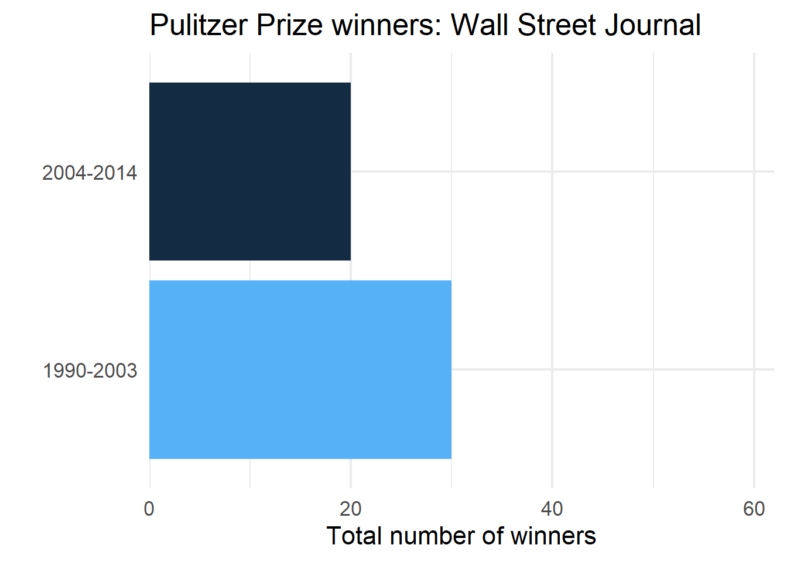
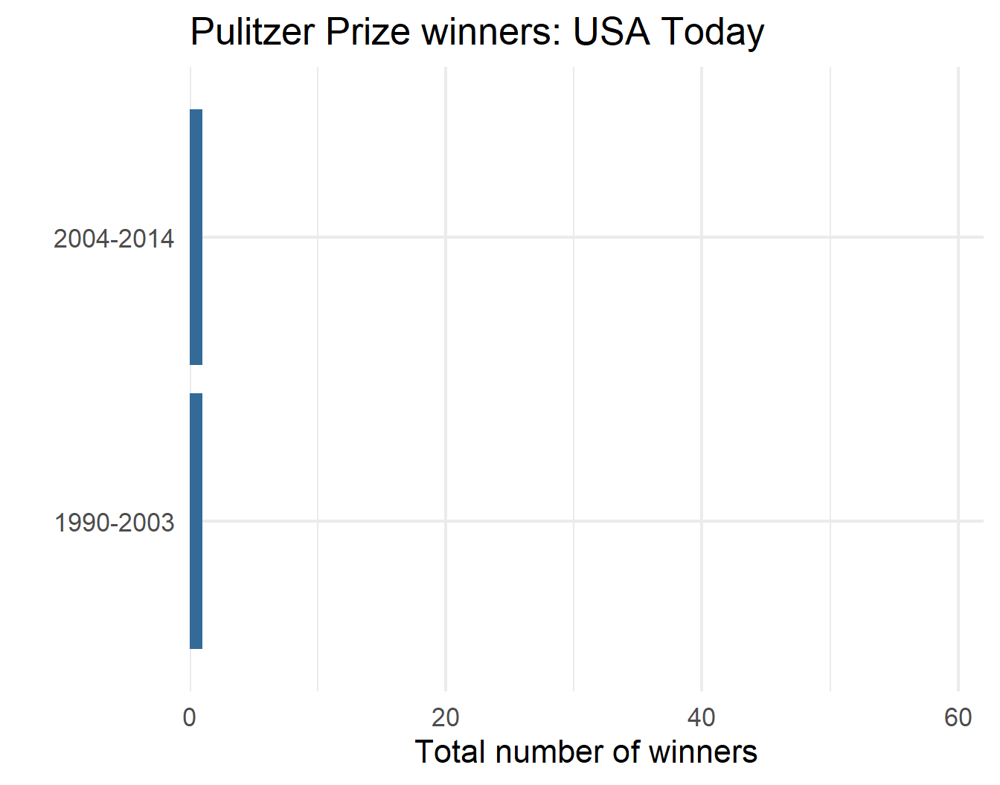
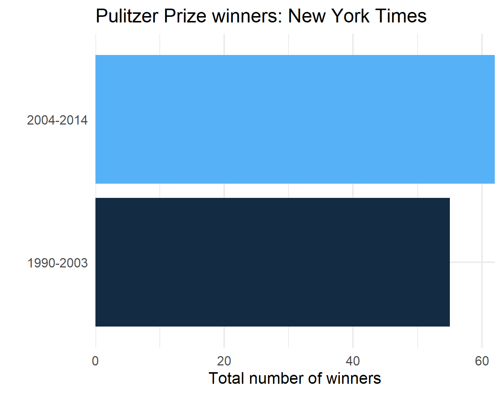
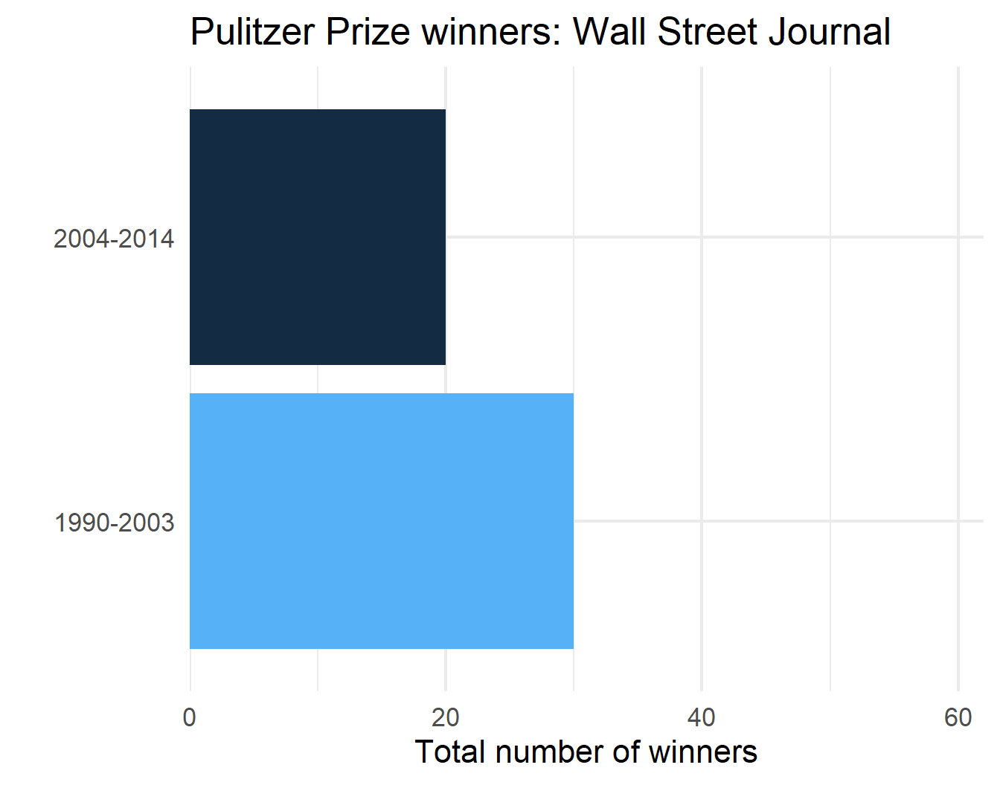
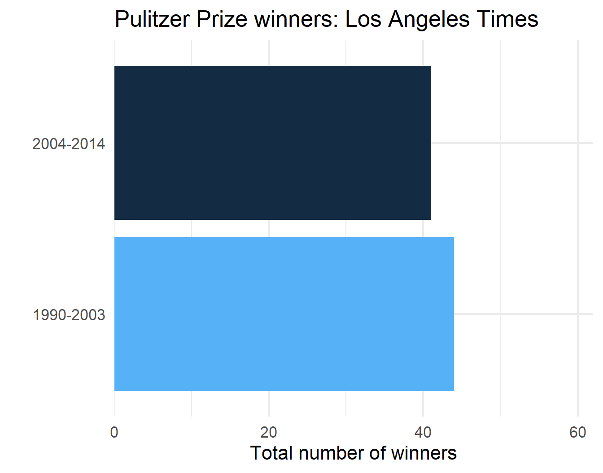
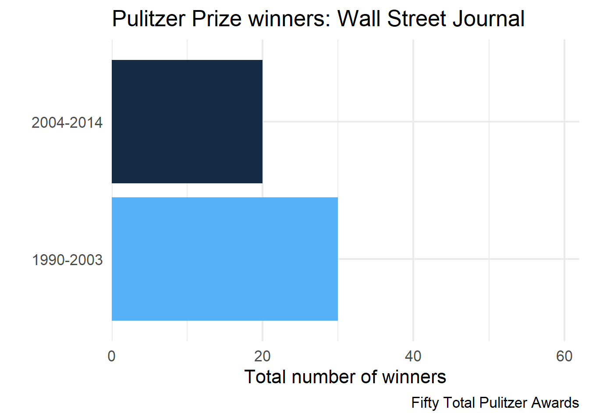
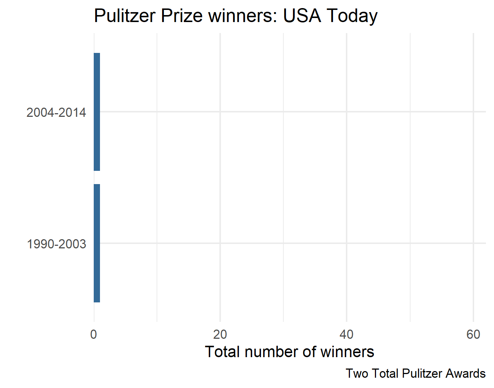
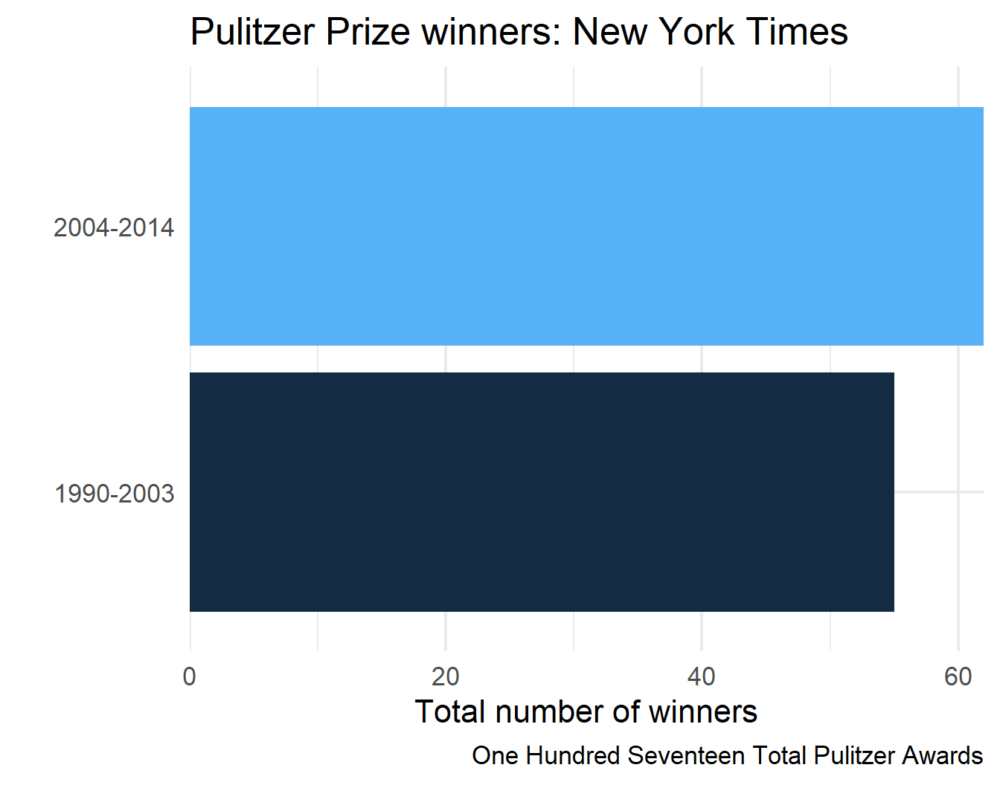
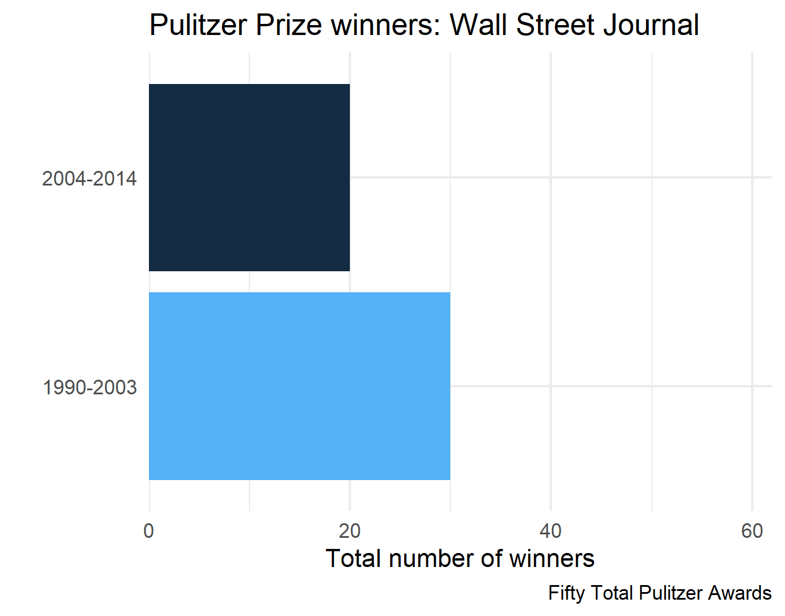
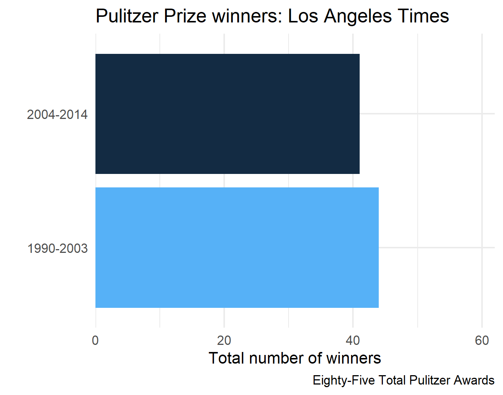

group_by() |>
summarise()Week 5: Parallel Iterations & Looping Variants
Parallel Iterations & Looping Variants
Week 5
Agenda
- Discuss
map2_()*andpmap_()*(parallel iterations) walk()and friendsmodify()safely()reduce()
Learning objectives
- Understand the differences between
map,map2, andpmap - Know when to apply
walk()instead ofmap(), and why it may be useful - Understand the similarities and differences between
map()andmodify() - Diagnose errors with
safely()and understand other situations where it may be helpful - Collapsing/reducing lists with
purrr::reduce()orbase::Reduce()
Quick Review: nest_by()
dplyr::nest_by()
- creates a list column for each group, AND
- converts it to a
rowwisedata frame
Think of it as:
…and storing the remaining columns as a nested tibble ready for rowwise() applications
We’ll come back to this
map2()
map2()

Two examples
Basic simulations - iterating over two vectors
Plots by month, changing the title
1) Iterating over two vectors
- Simulate data from a normal distribution
- Vary \(n\) from 5 to 150 by increments of 5
- For each \(n\), vary \(\mu\) (mean) from -2 to 2 by increments of 0.25
. . .
How do we get all combinations?
. . .
expand.grid()
expand.grid()
Bonus: It turns it into a data frame!
ints <- 1:3
lets <- c("a", "b", "c")
expand.grid(ints, lets) Var1 Var2
1 1 a
2 2 a
3 3 a
4 1 b
5 2 b
6 3 b
7 1 c
8 2 c
9 3 cSet conditions
Please follow along
conditions <- expand.grid(
n = seq(5, 150, 5),
mu = seq(-2, 2, 0.25)
)
nrow(conditions)[1] 510head(conditions) n mu
1 5 -2
2 10 -2
3 15 -2
4 20 -2
5 25 -2
6 30 -2tail(conditions) n mu
505 125 2
506 130 2
507 135 2
508 140 2
509 145 2
510 150 2Simulate!
sim1 <- map2(conditions$n, conditions$mu,
~rnorm(n = .x, mean = .y, sd = 10)
)
str(sim1)List of 510
$ : num [1:5] -3.584 -5.258 -1.559 4.107 0.728
$ : num [1:10] -1.622 16.219 -0.384 -5.216 8.929 ...
$ : num [1:15] 4.14 -17.27 2.27 -8.22 -1.32 ...
$ : num [1:20] -0.319 6.755 -18.641 -11.132 -8.202 ...
$ : num [1:25] 4.93 -5.44 2.12 -10.59 -6.11 ...
$ : num [1:30] -2.264 3.267 6.67 -10.262 0.611 ...
$ : num [1:35] 10.48 -6.05 2.7 15.08 -11.03 ...
$ : num [1:40] -5.8 -12.31 -10.03 5.63 -19.95 ...
$ : num [1:45] -4.50273 15.00993 0.00119 -9.81435 6.39183 ...
$ : num [1:50] 12.31 14.68 -11.98 3.82 -8.94 ...
$ : num [1:55] -2.995 -19.578 -0.33 0.297 -6.13 ...
$ : num [1:60] 4.901 11.626 -6.105 -0.396 1.502 ...
$ : num [1:65] 11.0188 9.6201 10.7452 -0.0145 20.1512 ...
$ : num [1:70] -18.85 -9.43 8.94 -2.73 -9.41 ...
$ : num [1:75] 8.83 2.14 -7.4 6.3 -14.42 ...
$ : num [1:80] 6.48 -12.5 -9.51 5.17 6.27 ...
$ : num [1:85] 7.167 7.216 -14.365 -0.262 -9.222 ...
$ : num [1:90] 5.67 2.55 -9.8 10.11 2.09 ...
$ : num [1:95] -10.42 -1.51 -3.12 -5.31 9.81 ...
$ : num [1:100] -4.836 0.978 11.351 -8.221 -13.673 ...
$ : num [1:105] 10.8 -10.5 14.4 -21.5 -3.9 ...
$ : num [1:110] -10.154 4.337 0.354 -3.355 4.519 ...
$ : num [1:115] 12.01 4.55 4.68 11.44 -2.67 ...
$ : num [1:120] -15.5 -2 3.44 9.42 -7.03 ...
$ : num [1:125] -23.07 8.69 -9.29 4.23 6.81 ...
$ : num [1:130] 14.48 -6.34 -5.14 7.23 -3.38 ...
$ : num [1:135] -3 5.343 -0.751 -3.022 -8.501 ...
$ : num [1:140] 6.88 1.47 1.19 -8.05 4.7 ...
$ : num [1:145] -11.67 -3.91 -2.53 -4.74 -16.06 ...
$ : num [1:150] 7.07 -25.95 -3.42 6.63 1.61 ...
$ : num [1:5] 16.732 -0.865 2.212 7.127 18.311
$ : num [1:10] -3.702 9.913 13.484 -0.468 -15.499 ...
$ : num [1:15] -3.006 -0.624 -7.207 -5.985 -28.571 ...
$ : num [1:20] -1.07 6.43 3.25 1.74 -2.78 ...
$ : num [1:25] -3.63 -4.61 6.95 4.72 13.37 ...
$ : num [1:30] -1.86 -4.77 -6.69 6.42 -15.36 ...
$ : num [1:35] 7.704 -0.989 -3.242 10.721 -10.97 ...
$ : num [1:40] 8.4 -10.78 1.15 3.43 23.61 ...
$ : num [1:45] 2.23 -8.58 4.95 -1.96 -8.36 ...
$ : num [1:50] 4.534 6.71 0.693 -11.112 3.067 ...
$ : num [1:55] -5.012 -0.537 -15.519 -1.902 -10.647 ...
$ : num [1:60] 4.64 9.709 -0.881 -13.464 -7.481 ...
$ : num [1:65] -6.26 16.8 -1.53 11.94 1.76 ...
$ : num [1:70] 7.877 -8.912 13.835 -4.718 0.738 ...
$ : num [1:75] 8.15 -14.25 -9.37 3.38 -14.3 ...
$ : num [1:80] -4.53 3.48 14.74 -5.52 -6.3 ...
$ : num [1:85] 0.794 -12.587 1.912 -13.406 1.997 ...
$ : num [1:90] -6.58 3.114 -3.064 -12.483 0.968 ...
$ : num [1:95] 1.32 -21.76 -15.79 -15.39 13.45 ...
$ : num [1:100] -4.88 2.52 -18.36 2.57 -7.45 ...
$ : num [1:105] 13.99 -4.61 7.38 -6.48 -5.88 ...
$ : num [1:110] -7 -10.68 4.98 -11.3 10.51 ...
$ : num [1:115] -15.69 2.85 6.34 -2.59 -3.55 ...
$ : num [1:120] 2.16 20 -0.65 -3.89 -7.11 ...
$ : num [1:125] 8.98 22.25 -6.59 -11.3 -7.12 ...
$ : num [1:130] -9.66 -6.4 6.28 -6.47 -1.8 ...
$ : num [1:135] -18.04 -15.86 5.24 2.61 -4.46 ...
$ : num [1:140] -3.12 10.64 15.76 24.05 -8.52 ...
$ : num [1:145] 4.57 -18.04 1.04 15.21 -3.88 ...
$ : num [1:150] 3.1 -19.38 -10.93 -0.99 -24.63 ...
$ : num [1:5] -3.58 -6.05 -23.12 -3.76 -4.99
$ : num [1:10] 1.14 2.6 -9.08 -18.77 -4.53 ...
$ : num [1:15] -1.279 15.078 0.458 5.629 4.667 ...
$ : num [1:20] -1.29 -12.62 2.43 2.43 -6.08 ...
$ : num [1:25] -0.607 1.742 19.113 5.521 -12.939 ...
$ : num [1:30] 0.417 -4.135 -24.175 -21.683 -15.144 ...
$ : num [1:35] -24.3 -9.32 -11.67 10.72 18.21 ...
$ : num [1:40] -17.98 4 17.879 3.262 0.917 ...
$ : num [1:45] 1.62 2.79 -14.91 -5.21 -6.45 ...
$ : num [1:50] 12.2 -18.3 -3.1 20 -9.9 ...
$ : num [1:55] -0.934 1.667 -8.029 16.243 5.864 ...
$ : num [1:60] -12.26 12.12 -10.59 -3.04 -14.01 ...
$ : num [1:65] -6.915 8.549 -0.324 1.416 -12.527 ...
$ : num [1:70] 4.793 -1.976 -0.901 16.003 4.917 ...
$ : num [1:75] -4.911 7.141 0.831 1.064 4.503 ...
$ : num [1:80] 6.063 -0.383 -6.209 1.529 0.662 ...
$ : num [1:85] -18.52 15.28 -12.25 7.92 3.27 ...
$ : num [1:90] -12.4674 -10.511 6.9269 -1.7857 0.0829 ...
$ : num [1:95] 0.594 -2.495 5.076 1.73 -1.43 ...
$ : num [1:100] 4.3 -3.22 10.4 -8.08 -9.04 ...
$ : num [1:105] -4.6881 0.0637 1.0034 -17.6406 -18.5743 ...
$ : num [1:110] 13.863 -1.523 -2.787 1.973 -0.658 ...
$ : num [1:115] 16.34 4.64 -7.5 -12.91 -12.09 ...
$ : num [1:120] -11.38 -2.82 -7.07 -16.61 -3.87 ...
$ : num [1:125] -18.46 7.5 -4.06 -2.82 2.31 ...
$ : num [1:130] 2.26 -14.01 0.52 -12.01 1.29 ...
$ : num [1:135] 4.62 -9.46 2.69 4.67 4.69 ...
$ : num [1:140] -21.73 -13.98 -9.49 8.15 25.38 ...
$ : num [1:145] -5.15 12.5 -8.28 -12.4 12.53 ...
$ : num [1:150] 2.69 9.66 -6.33 7.43 1.73 ...
$ : num [1:5] 12.81 -7.79 -9.92 5.49 -7.3
$ : num [1:10] 4.25 -2.75 -16.08 9.37 10.53 ...
$ : num [1:15] -5.36 -6.17 -4.59 -5.99 8.74 ...
$ : num [1:20] -2.95 -2.39 4.92 -14.73 3.76 ...
$ : num [1:25] 0.132 1.351 9.65 9.154 -0.214 ...
$ : num [1:30] -2.024 -6.643 11.349 2.944 -0.809 ...
$ : num [1:35] -7.198 -0.559 -5.911 -21.145 -10.707 ...
$ : num [1:40] 0.546 -14.243 -3.202 -10.952 4.859 ...
$ : num [1:45] 14.319 9.792 -8.55 -1.949 0.728 ...
[list output truncated]Add it as a list column!
More powerful (this is my preferred method)
sim2 <- conditions |>
as_tibble() |> # Not required, but definitely helpful
mutate(sim = map2(n, mu, ~rnorm(n = .x, mean = .y, sd = 10)))
sim2# A tibble: 510 × 3
n mu sim
<dbl> <dbl> <list>
1 5 -2 <dbl [5]>
2 10 -2 <dbl [10]>
3 15 -2 <dbl [15]>
4 20 -2 <dbl [20]>
5 25 -2 <dbl [25]>
6 30 -2 <dbl [30]>
7 35 -2 <dbl [35]>
8 40 -2 <dbl [40]>
9 45 -2 <dbl [45]>
10 50 -2 <dbl [50]>
# ℹ 500 more rowsUnnest
Challenge
Can you replicate what we just did, but using a rowwise() approach?
. . .
Remember
mutate()expects each a vector of the same length as the data frame — one value per rowrnorm(n, mu, sd = 10)returns a vector of lengthn, not a single value- Without
list(),{dplyr}would try to unpack thosenvalues directly into the column, causing a length mismatch error - Wrapping in
list()boxes the vector into of length = 1- a list with one element
- so
mutate()sees exactly one element per row: a length-1 list containing the vector
. . .
With list():
row 1 → list(c(0.3, -1.2, 0.8)) ✓ length 1
row 2 → list(c(0.1, 2.4, ...)) ✓ length 1
. . .
Without list():
row 1 → c(0.3, -1.2, 0.8) ✗ length 3 — doesn’t fit in one row
2) Plots by month, changing the title
Please follow along
The data
library(fivethirtyeight)
pulitzer# A tibble: 50 × 7
newspaper circ2004 circ2013 pctchg_circ num_finals1990_2003
<chr> <dbl> <dbl> <int> <int>
1 USA Today 2192098 1674306 -24 1
2 Wall Street Journal 2101017 2378827 13 30
3 New York Times 1119027 1865318 67 55
4 Los Angeles Times 983727 653868 -34 44
5 Washington Post 760034 474767 -38 52
6 New York Daily News 712671 516165 -28 4
7 New York Post 642844 500521 -22 0
8 Chicago Tribune 603315 414930 -31 23
9 San Jose Mercury News 558874 583998 4 4
10 Newsday 553117 377744 -32 12
# ℹ 40 more rows
# ℹ 2 more variables: num_finals2004_2014 <int>, num_finals1990_2014 <int>Prep data
pulitzer <- fivethirtyeight::pulitzer |>
select(newspaper, starts_with("num")) |>
pivot_longer(
-newspaper,
names_to = "year_range",
values_to = "n",
names_prefix = "num_finals"
) |>
mutate(year_range = str_replace_all(year_range, "_", "-")) |>
filter(year_range != "1990-2014")
head(pulitzer)# A tibble: 6 × 3
newspaper year_range n
<chr> <chr> <int>
1 USA Today 1990-2003 1
2 USA Today 2004-2014 1
3 Wall Street Journal 1990-2003 30
4 Wall Street Journal 2004-2014 20
5 New York Times 1990-2003 55
6 New York Times 2004-2014 62One plot
wsj <- pulitzer |>
filter(newspaper == "Wall Street Journal")
ggplot(wsj, aes(n, year_range)) +
geom_col(aes(fill = n)) +
scale_x_continuous(
limits = c(0, max(pulitzer$n)),
expand = c(0, 0)
) +
guides(fill = "none") +
labs(
title = "Pulitzer Prize winners: Wall Street Journal",
x = "Total number of winners",
y = ""
) 
Nest data
by_newspaper <- pulitzer |>
group_by(newspaper) |>
nest()
by_newspaper# A tibble: 50 × 2
# Groups: newspaper [50]
newspaper data
<chr> <list>
1 USA Today <tibble [2 × 2]>
2 Wall Street Journal <tibble [2 × 2]>
3 New York Times <tibble [2 × 2]>
4 Los Angeles Times <tibble [2 × 2]>
5 Washington Post <tibble [2 × 2]>
6 New York Daily News <tibble [2 × 2]>
7 New York Post <tibble [2 × 2]>
8 Chicago Tribune <tibble [2 × 2]>
9 San Jose Mercury News <tibble [2 × 2]>
10 Newsday <tibble [2 × 2]>
# ℹ 40 more rowsProduce all plots
You try first!
Don’t worry about the correct title yet
Solution
. . .
Just the plots
# A tibble: 50 × 3
# Groups: newspaper [50]
newspaper data plot
<chr> <list> <list>
1 USA Today <tibble [2 × 2]> <ggplt2::>
2 Wall Street Journal <tibble [2 × 2]> <ggplt2::>
3 New York Times <tibble [2 × 2]> <ggplt2::>
4 Los Angeles Times <tibble [2 × 2]> <ggplt2::>
5 Washington Post <tibble [2 × 2]> <ggplt2::>
6 New York Daily News <tibble [2 × 2]> <ggplt2::>
7 New York Post <tibble [2 × 2]> <ggplt2::>
8 Chicago Tribune <tibble [2 × 2]> <ggplt2::>
9 San Jose Mercury News <tibble [2 × 2]> <ggplt2::>
10 Newsday <tibble [2 × 2]> <ggplt2::>
# ℹ 40 more rowsAdd title
. . .
library(glue)
p <- by_newspaper |>
mutate(
plot = map2(data, newspaper,
~.x |>
ggplot(aes(n, year_range)) +
geom_col(aes(fill = n)) +
scale_x_continuous(
limits = c(0, max(pulitzer$n)),
expand = c(0, 0)
) +
guides(fill = "none") +
labs(
title = glue("Pulitzer Prize winners: {.y}"), # or paste("Pulitzer Prize winners: ", .y)
x = "Total number of winners",
y = ""
)
)
)p# A tibble: 50 × 3
# Groups: newspaper [50]
newspaper data plot
<chr> <list> <list>
1 USA Today <tibble [2 × 2]> <ggplt2::>
2 Wall Street Journal <tibble [2 × 2]> <ggplt2::>
3 New York Times <tibble [2 × 2]> <ggplt2::>
4 Los Angeles Times <tibble [2 × 2]> <ggplt2::>
5 Washington Post <tibble [2 × 2]> <ggplt2::>
6 New York Daily News <tibble [2 × 2]> <ggplt2::>
7 New York Post <tibble [2 × 2]> <ggplt2::>
8 Chicago Tribune <tibble [2 × 2]> <ggplt2::>
9 San Jose Mercury News <tibble [2 × 2]> <ggplt2::>
10 Newsday <tibble [2 × 2]> <ggplt2::>
# ℹ 40 more rowsLook at a couple plots
p$plot[[1]]
p$plot[[3]]
p$plot[[2]]
p$plot[[4]]
Challenge
(You can probably guess where this is going)
. . .
Can you reproduce the prior plots using a rowwise() approach?
Solution
. . .
pulitzer |>
nest_by(newspaper) |>
mutate(
plot = list(
ggplot(data, aes(n, year_range)) +
geom_col(aes(fill = n)) +
scale_x_continuous(
limits = c(0, max(pulitzer$n)),
expand = c(0, 0)
) +
guides(fill = "none") +
labs(
title = glue("Pulitzer Prize winners: {newspaper}"),
x = "Total number of winners",
y = ""
)
)
)# A tibble: 50 × 3
# Rowwise: newspaper
newspaper data plot
<chr> <list<tibble[,2]>> <list>
1 Arizona Republic [2 × 2] <ggplt2::>
2 Atlanta Journal Constitution [2 × 2] <ggplt2::>
3 Baltimore Sun [2 × 2] <ggplt2::>
4 Boston Globe [2 × 2] <ggplt2::>
5 Boston Herald [2 × 2] <ggplt2::>
6 Charlotte Observer [2 × 2] <ggplt2::>
7 Chicago Sun-Times [2 × 2] <ggplt2::>
8 Chicago Tribune [2 × 2] <ggplt2::>
9 Cleveland Plain Dealer [2 × 2] <ggplt2::>
10 Columbus Dispatch [2 × 2] <ggplt2::>
# ℹ 40 more rowspmap()
Iterating over \(n\) vectors

. . .
But we can have as many elements p as we want
Simulation
- Simulate data from a normal distribution
- Vary \(n\) from 5 to 150 by increments of 5
- For each \(n\), vary \(\mu\) (mean) from -2 to 2 by increments of 0.25
- For each \(n\) and \(\mu\), vary each \(\sigma\) (SD) from 1 to 3 by increments of 0.1
Simulation
full_conditions <- expand.grid(
n = seq(5, 150, 5),
mu = seq(-2, 2, 0.25),
sd = seq(1, 3, .1)
)
nrow(full_conditions)[1] 10710head(full_conditions) n mu sd
1 5 -2 1
2 10 -2 1
3 15 -2 1
4 20 -2 1
5 25 -2 1
6 30 -2 1tail(full_conditions) n mu sd
10705 125 2 3
10706 130 2 3
10707 135 2 3
10708 140 2 3
10709 145 2 3
10710 150 2 3Full Simulation
fsim <- pmap(
list(
number = full_conditions$n,
average = full_conditions$mu,
stdev = full_conditions$sd
),
function(number, average, stdev) {
rnorm(n = number, mean = average, sd = stdev)
}
)
str(fsim)List of 10710
$ : num [1:5] -0.386 -1.191 -1.168 -4.679 -2.934
$ : num [1:10] -4.25 -3.39 -2.36 -2.22 -1.77 ...
$ : num [1:15] -2.83 -3.76 -3.06 -2.38 -1.63 ...
$ : num [1:20] -3.405 -3.075 0.688 -2.412 -2.007 ...
$ : num [1:25] -2.42 -1.5 -1.23 -2.11 -3.8 ...
$ : num [1:30] -1.97 -1.3 -2.15 -2.28 -2.92 ...
$ : num [1:35] -3.136 -3.374 -3.314 -0.405 -1.968 ...
$ : num [1:40] -1.23 -2.32 -1.97 -2.42 -2.68 ...
$ : num [1:45] -3.6944 -1.1268 0.0636 -2.4037 0.1637 ...
$ : num [1:50] -3.2 -1.54 -2.27 -2.48 -1.65 ...
$ : num [1:55] -1.246 -0.105 -3.795 -1.411 -3.255 ...
$ : num [1:60] -0.365 -2.955 -1.511 -2.928 -1.466 ...
$ : num [1:65] -3.162 -0.635 -1.853 -0.725 -2.477 ...
$ : num [1:70] -1.34 -1.46 -4.3 -1.52 -1.3 ...
$ : num [1:75] -3.73 -3.92 -3 -2.48 -3.71 ...
$ : num [1:80] -0.855 -2.804 -0.518 -2.174 -1.123 ...
$ : num [1:85] -0.642 -2.491 -2.918 -2.281 -3.172 ...
$ : num [1:90] -1.93 -2.12 -1.56 -1.89 -1.31 ...
$ : num [1:95] -3.868 -1.943 -0.247 -0.668 -1.018 ...
$ : num [1:100] -1.69 -1.53 -1.27 -1.79 -1.41 ...
$ : num [1:105] -1.12 -2.47 -3.06 -1.39 -3.16 ...
$ : num [1:110] -0.623 -2.854 -3.027 -1.559 -3.688 ...
$ : num [1:115] -1.831 -2.064 -1.626 -4.601 -0.326 ...
$ : num [1:120] -0.513 -0.477 -0.609 -3.166 -4.099 ...
$ : num [1:125] -2.175 -0.603 -3.315 -2.556 -4.255 ...
$ : num [1:130] -2.73 -2.84 -2.57 -1.65 -1.18 ...
$ : num [1:135] -2.7 -1.49 -3.06 -2.03 -1.42 ...
$ : num [1:140] -2 -1.1 -3.19 -2.41 -2.01 ...
$ : num [1:145] -1.972 -2.655 -2.254 -2.38 0.457 ...
$ : num [1:150] -4.347 -3.263 -3.179 -1.876 -0.657 ...
$ : num [1:5] -2.925 -0.572 -1.435 -1.858 -1.686
$ : num [1:10] -1.282 -3.339 -0.862 -1.176 -1.355 ...
$ : num [1:15] -2.771 -1.927 -2.153 -0.411 -1.184 ...
$ : num [1:20] -1.589 -3.1 -1.881 0.352 -3.094 ...
$ : num [1:25] -0.741 -3.108 -1.3 -3.07 -2.664 ...
$ : num [1:30] -0.54 0.505 -3.483 -2.282 -3.126 ...
$ : num [1:35] -0.919 -1.112 -2.469 -3.538 -1.411 ...
$ : num [1:40] -2.08 -1.65 -1.56 1.19 -2.16 ...
$ : num [1:45] -2.3963 -0.0729 -1.0399 -1.5708 -0.6202 ...
$ : num [1:50] -2.01 -1.55 -3.54 -1.1 -1.98 ...
$ : num [1:55] -1.779 -2.144 -2.073 -1.287 -0.809 ...
$ : num [1:60] -1.12 -1.5 -1.34 -1.07 -1.05 ...
$ : num [1:65] -3.128 0.132 -0.424 -1.832 -1.327 ...
$ : num [1:70] -0.686 -0.759 -0.322 -2.22 -2.174 ...
$ : num [1:75] -1.4 -2.2 -2.54 -1.67 -2.67 ...
$ : num [1:80] -1.124 -2.482 -1.287 -0.195 0.35 ...
$ : num [1:85] -2.1314 0.0599 -0.3544 -1.7442 -2.7127 ...
$ : num [1:90] -0.892 -1.54 -1.726 0.283 -1.022 ...
$ : num [1:95] -2.042 -1.311 -2.042 -0.244 -1.345 ...
$ : num [1:100] -2.75 -1.92 -1.3 -2.64 -1.29 ...
$ : num [1:105] -1.645 1.23 -0.254 -2.12 -4.167 ...
$ : num [1:110] -0.667 -2.603 -1.576 -3.013 -3.924 ...
$ : num [1:115] -3.07 0.217 -0.813 -2.39 -1.582 ...
$ : num [1:120] -0.0549 -0.985 -2.0129 -3.7293 -0.8975 ...
$ : num [1:125] -0.834 -0.894 -3.692 -2.548 -1.706 ...
$ : num [1:130] -1.802 -2.555 -1.245 -3.035 0.869 ...
$ : num [1:135] -3.58 -1.12 -1.41 -2.75 -3.15 ...
$ : num [1:140] -2.906 -1.566 -1.094 -2.915 -0.571 ...
$ : num [1:145] -2.272 -1.778 -2.557 -0.819 -1.981 ...
$ : num [1:150] -1.211 -2.035 -1.4 0.232 -0.105 ...
$ : num [1:5] -0.582 -3.255 -2.907 -2.177 -2.63
$ : num [1:10] -2.061 -2.184 -0.712 -0.788 -1.314 ...
$ : num [1:15] -2.35 -1.29 -0.416 -1.646 0.253 ...
$ : num [1:20] -1.732 -0.926 -1.418 -2.356 -0.245 ...
$ : num [1:25] -0.959 -2.024 -2.375 -2.901 -0.474 ...
$ : num [1:30] -0.998 -2.32 0.846 -1.076 -2.547 ...
$ : num [1:35] 0.601 -2.605 -2.654 -1.187 -2.277 ...
$ : num [1:40] -1.81 -3.55 -3.6 -1.28 -2.05 ...
$ : num [1:45] -0.7933 -1.1579 -0.0643 -1.8755 -2.3114 ...
$ : num [1:50] -1.251 -1.494 -0.669 -2.357 -1.328 ...
$ : num [1:55] -2.272 -1.552 -2.177 -0.721 -1.804 ...
$ : num [1:60] -2.509 -2.238 -1.481 0.728 -1.526 ...
$ : num [1:65] -1.203 -1.438 0.395 -0.238 -1.83 ...
$ : num [1:70] -2.543 -1.859 0.245 -1.333 -1.652 ...
$ : num [1:75] -0.521 -1.445 -3.809 -1.798 -0.52 ...
$ : num [1:80] -1.917 -0.949 -1.304 0.718 -1.811 ...
$ : num [1:85] -1.79 -1.1 -1.55 -2.92 -1.38 ...
$ : num [1:90] 0.777 -1.997 -0.994 -1.34 -0.392 ...
$ : num [1:95] -1.053 -1.869 -0.773 -2.451 -3.382 ...
$ : num [1:100] -2.453 -0.641 -2.333 -1.513 -0.834 ...
$ : num [1:105] 0.4849 -1.2238 0.431 -3.7462 -0.0203 ...
$ : num [1:110] -2.62 -2.57 -1.42 -2 -2.73 ...
$ : num [1:115] -1.992 -0.74 1.488 -0.722 -2.62 ...
$ : num [1:120] -1.77 -1.77 -2.86 -2.71 0.19 ...
$ : num [1:125] -1.4 -1 -1.45 -1.02 -3.24 ...
$ : num [1:130] -0.825 -0.896 -1.59 -0.479 -1.079 ...
$ : num [1:135] -1.45 -1.02 -1.97 -1.6 -1.86 ...
$ : num [1:140] -0.632 -0.686 -1.44 -0.387 -1.532 ...
$ : num [1:145] -0.57 -1.46 -3.07 -2.06 -2.17 ...
$ : num [1:150] -0.0527 -1.722 -0.8413 -2.0661 -2.448 ...
$ : num [1:5] -1.37 -0.67 0.37 -2.8 -2.42
$ : num [1:10] -2.09 -1.31 -1.25 -1.43 -1.94 ...
$ : num [1:15] -0.152 -2.425 -0.485 -2.802 0.224 ...
$ : num [1:20] 0.0797 -1.5761 -0.3594 -1.5709 1.0829 ...
$ : num [1:25] -1.877 -1.49 -1.948 -0.449 -2.216 ...
$ : num [1:30] -0.471 -0.279 -0.965 -1.341 -0.986 ...
$ : num [1:35] -1.22974 0.23772 0.11952 -2.30691 0.00693 ...
$ : num [1:40] -2.611 -0.696 -2.11 -1.014 -1.981 ...
$ : num [1:45] 0.663 -2.309 -1.685 -2.275 -1.183 ...
[list output truncated]Alternative specification
fsim <- pmap(
list(
full_conditions$n,
full_conditions$mu,
full_conditions$sd
),
~rnorm(n = ..1, mean = ..2, sd = ..3)
)
str(fsim)List of 10710
$ : num [1:5] 0.211 -2.227 -1.608 -3.111 -1.777
$ : num [1:10] -2.23 -2.87 -1.99 -1.46 -2.32 ...
$ : num [1:15] -1.33 -3.62 -2.11 -1.04 -1.77 ...
$ : num [1:20] -2.938 -0.725 -1.709 -2.874 -2.698 ...
$ : num [1:25] 0.731 -0.483 -1.008 -0.68 -3.291 ...
$ : num [1:30] -2.948 -3.098 -0.541 -1.459 -0.975 ...
$ : num [1:35] -1.686 -3.468 -1.747 0.191 -1.963 ...
$ : num [1:40] -2.378 -3.136 -0.916 -3.167 -1.276 ...
$ : num [1:45] -2.24 -2.04 -3.06 -1.66 -2.78 ...
$ : num [1:50] -3.654 -1.431 -0.445 -2.459 0.586 ...
$ : num [1:55] -1.7 -4.27 -1.64 -1.21 -3.34 ...
$ : num [1:60] -2.94 -2.61 -1.05 -2.53 0.13 ...
$ : num [1:65] -1.88 -3.56 -1.97 -3.47 -1.8 ...
$ : num [1:70] -2.817 -0.881 -2.485 -2.185 -1.494 ...
$ : num [1:75] 0.484 -1.178 -3.014 -0.647 -2.366 ...
$ : num [1:80] -2.89 -2.43 -1.76 -1.18 -1.88 ...
$ : num [1:85] -2.196 -0.305 -1.446 -1.768 -3.011 ...
$ : num [1:90] -3.32 -1.01 -2.03 -1.17 -3.77 ...
$ : num [1:95] -0.427 -2.902 -2.253 -1.277 -2.458 ...
$ : num [1:100] -2.35 -3.13 -2.45 -1.24 -2.49 ...
$ : num [1:105] -2.69 -2.47 -1.4 -4.2 -2.86 ...
$ : num [1:110] -2.652 -2.078 -3.605 -1.61 -0.901 ...
$ : num [1:115] -2.8 -1.84 -0.77 -2.51 -1.12 ...
$ : num [1:120] -1.89 -1.08 -3.17 -1.1 -1.76 ...
$ : num [1:125] -1.917 -2.105 -4.278 -0.965 -1.71 ...
$ : num [1:130] -1.6201 -0.1934 -2.7775 -2.5982 -0.0229 ...
$ : num [1:135] -0.8986 -0.0478 -1.4408 -1.123 -2.4411 ...
$ : num [1:140] -3.013 -0.599 -2.43 -2.535 -3.696 ...
$ : num [1:145] -1.06 -2.01 -2.01 -2.21 -2.25 ...
$ : num [1:150] -1.02 -2.27 -1.319 -1.716 -0.396 ...
$ : num [1:5] -1.927 -1.366 -1.358 -0.315 -2.602
$ : num [1:10] -2.296 -1.558 -2.402 -1.455 -0.956 ...
$ : num [1:15] -0.922 -2.846 -1.628 -0.549 -0.595 ...
$ : num [1:20] -2.78 0.436 -2.551 -1.826 -1.546 ...
$ : num [1:25] -2.311 -3.076 -1.562 -0.229 -1.981 ...
$ : num [1:30] -1.4935 -2.0299 -1.2267 -2.1249 -0.0862 ...
$ : num [1:35] -1.648 -3.188 -2.225 -0.776 -2.874 ...
$ : num [1:40] -1.585 -0.56 -1.64 -3 -0.513 ...
$ : num [1:45] -3.3047 -2.0366 -1.8569 -0.0256 -2.5043 ...
$ : num [1:50] -0.923 -1.809 -1.726 0.519 -2.129 ...
$ : num [1:55] -1.96 -1.62 -2.69 -2.46 -1.52 ...
$ : num [1:60] -2.99 -2.16 -3.01 -2.08 -2.63 ...
$ : num [1:65] -0.797 -1.297 -0.259 -0.889 -2.024 ...
$ : num [1:70] -1.72 -1.03 -3.285 -0.971 -0.986 ...
$ : num [1:75] -1.045 -1.782 -2.294 -0.851 -2.682 ...
$ : num [1:80] -0.203 -1.177 -2.49 -0.754 -2.7 ...
$ : num [1:85] -1.112 0.755 -1.37 -1.82 -2.125 ...
$ : num [1:90] -1.377 -0.916 -2.491 -0.684 -1.147 ...
$ : num [1:95] -1.28 -2.98 -2.19 -1.06 -1.53 ...
$ : num [1:100] -1.666 -2.47 -3.093 -2.878 -0.614 ...
$ : num [1:105] -2.578 -2.368 -0.821 -0.983 -2.376 ...
$ : num [1:110] -1.064 -3.001 -0.193 -4.412 0.234 ...
$ : num [1:115] -3.92 -3.59 -3 -3.22 -1 ...
$ : num [1:120] -0.411 -2.244 -2.318 -2.097 -1.408 ...
$ : num [1:125] -1.092 -1.213 -3.073 -0.786 -1.938 ...
$ : num [1:130] -1.33 -1.69 -1.92 -1.5 -1.91 ...
$ : num [1:135] -0.51 -1.57 -1.84 -1.51 -2.85 ...
$ : num [1:140] -0.822 -1.203 -1.088 -1.371 -2.637 ...
$ : num [1:145] -2.622 -0.758 -1.928 -1.664 -1.811 ...
$ : num [1:150] -1.528 -0.013 -1.711 -2.414 -2.793 ...
$ : num [1:5] -0.837 -1.649 -1.193 -1.527 -2.011
$ : num [1:10] -0.302 -1.099 -0.299 -1.784 -2.044 ...
$ : num [1:15] -1.63 0.55 -2.44 -2.18 -1.02 ...
$ : num [1:20] -1.4 -1.99 -1.75 -4.42 -1.21 ...
$ : num [1:25] -1.2145 -0.9943 0.0929 -1.8885 -1.342 ...
$ : num [1:30] -1.82 0.39 -2.26 -1.21 -2.15 ...
$ : num [1:35] -2.06 -1.43 -2.66 -2.69 -2.82 ...
$ : num [1:40] -0.534 -2.571 -1.644 -1.121 -1.077 ...
$ : num [1:45] -1.419 -0.671 -2.093 -0.453 -2.029 ...
$ : num [1:50] -1.0078 -2.2628 -3.0057 -0.0857 -2.9158 ...
$ : num [1:55] -2.402 -2.777 -0.344 -4.251 -1.279 ...
$ : num [1:60] -2.625 -1.739 -0.953 -0.8 -1.64 ...
$ : num [1:65] -1.9 -1.83 -2.17 -1.87 -1.64 ...
$ : num [1:70] -2.633 0.483 -2.433 -2.479 -0.718 ...
$ : num [1:75] -0.185 -2.802 -1.306 -2.013 -1.065 ...
$ : num [1:80] -0.961 -1.358 -1.962 -2.209 -1.69 ...
$ : num [1:85] -1.881 0.224 -1.104 -1.007 1.092 ...
$ : num [1:90] -1.56 -2.98 -1.36 -1.05 -3.25 ...
$ : num [1:95] -0.7319 -0.0119 -1.3201 -1.6105 -0.8692 ...
$ : num [1:100] -4.705 -1.913 -0.896 -0.828 -0.865 ...
$ : num [1:105] -0.27 -2.18 -2.92 -1.61 -1.94 ...
$ : num [1:110] -1.204 0.271 -0.26 -2.139 -0.844 ...
$ : num [1:115] -2.386 -1.601 -0.387 -0.533 -0.699 ...
$ : num [1:120] -1.327 -0.796 -2.813 -1.504 0.238 ...
$ : num [1:125] -2.788 -1.885 -2.018 -0.826 -1.417 ...
$ : num [1:130] -3.218 -1.915 -1.776 -1.334 -0.846 ...
$ : num [1:135] -0.45355 -0.97749 -1.75986 -0.00657 -0.32274 ...
$ : num [1:140] -1.53 -2.03 -2.25 -2.85 -1.47 ...
$ : num [1:145] -2.04 -1.07 1.3 -1.15 -1.26 ...
$ : num [1:150] 0.22 -1.673 -0.621 -2.044 -1.273 ...
$ : num [1:5] -0.557 -2.029 -0.551 0.131 -0.296
$ : num [1:10] -0.77 -1.47 -3.713 -0.438 -1.131 ...
$ : num [1:15] -2.336 -0.818 0.196 -0.703 -1.28 ...
$ : num [1:20] -1.1271 -1.3691 0.0311 -1.5235 -1.0771 ...
$ : num [1:25] -1.038 -0.851 -1.537 -2.305 -0.825 ...
$ : num [1:30] -0.836 -2.12 -2.082 0.331 -1.225 ...
$ : num [1:35] -3.227 -2.219 -2.713 -0.528 0.808 ...
$ : num [1:40] -2.841 -1.625 0.367 -1.716 -2.465 ...
$ : num [1:45] -1.421 -1.829 0.143 -1.749 -2.765 ...
[list output truncated]Why the .. prefix?
.or.xis used as the placeholder inmap().xand.yare the convention formap2()- So for multi-argument
pmap(), the..prefix is{purrr}’s convention for anonymous positional arguments- avoid confusion with other functions
- signals “this is the \(p^{th}\) argument in the parallel list”
Simpler still
Maybe a little too clever
A data frame is a list so…
fsim <- pmap(
full_conditions,
~rnorm(n = ..1, mean = ..2, sd = ..3)
)
str(fsim)List of 10710
$ : num [1:5] -1.678 -4.347 -1.803 -2.485 -0.686
$ : num [1:10] -1.202 -2.21 -3.103 -0.978 -2.325 ...
$ : num [1:15] -2.71 -1.9 -1.6 -2.56 -4.17 ...
$ : num [1:20] -3 -5.25 -2.16 -1.69 -4.34 ...
$ : num [1:25] -2.292 -2.777 -2.855 -1.01 -0.955 ...
$ : num [1:30] -1.628 -1.85 -2.043 -2.14 -0.808 ...
$ : num [1:35] -3.316 -0.902 -2.236 -1.213 -1.428 ...
$ : num [1:40] -1.95 -1.41 -1.66 -1.17 -1.74 ...
$ : num [1:45] -2.45 -2.29 -2.49 -0.93 -1.42 ...
$ : num [1:50] -1.91 -1.45 -2.07 -2.74 -2.02 ...
$ : num [1:55] -2.7714 -1.4318 -0.0393 -1.5217 -1.4081 ...
$ : num [1:60] -1.91 -2.08 -3.25 -3.3 -1.47 ...
$ : num [1:65] -2.29 -1.21 -3.61 -1.58 -3.39 ...
$ : num [1:70] -2.68 -1.45 -2.04 -2.31 -1.76 ...
$ : num [1:75] -2.406 -2.513 -2.291 -0.056 -2.341 ...
$ : num [1:80] -3.17 -1.81 -3.19 -1.95 -0.6 ...
$ : num [1:85] -3.0658 -0.0066 -0.3265 -2.1311 -1.9444 ...
$ : num [1:90] -3.119 -2.466 -0.972 -2.172 -3.117 ...
$ : num [1:95] -2.45 -1.63 -2.48 -2.55 -1.24 ...
$ : num [1:100] -2.127 -0.928 -0.993 -1.537 -0.559 ...
$ : num [1:105] -1.02 -1.5 -3.83 -1.86 -4.23 ...
$ : num [1:110] -1.861 0.192 -2.22 -2.167 -2.771 ...
$ : num [1:115] -2.472 -1.062 -1.808 -3.742 -0.666 ...
$ : num [1:120] -2.51 -3.22 -1.83 -1.99 -1.3 ...
$ : num [1:125] -1.85 -2.02 -1.58 -2.21 -2.69 ...
$ : num [1:130] -1.78 -1.32 -1.15 -1.19 -2.17 ...
$ : num [1:135] -1.609 -2.142 -2.563 -2.152 -0.262 ...
$ : num [1:140] -2.51 -1.863 -0.408 -1.879 -4.753 ...
$ : num [1:145] -1.31 -2.64 -2.08 -1.85 -1.3 ...
$ : num [1:150] -1.34 -1.62 -1.86 -1.38 -2.58 ...
$ : num [1:5] -2.795 -1.427 -0.591 -1.408 -0.936
$ : num [1:10] -1.712 -2.411 -0.743 -0.78 -1.472 ...
$ : num [1:15] -2.982 -2.122 -3.562 -0.792 -1.291 ...
$ : num [1:20] -1.4964 -3.334 0.0244 -0.5344 -1.49 ...
$ : num [1:25] -1.66 -1.39 -1.51 -1.15 -1.68 ...
$ : num [1:30] -1.307 -0.68 -1.67 -1.405 -0.871 ...
$ : num [1:35] -2.869 1.014 -1.914 -1.105 -0.426 ...
$ : num [1:40] -2.034 -0.932 -2.181 -4.998 -2.047 ...
$ : num [1:45] -2.611 0.2 -0.601 -0.738 -1.383 ...
$ : num [1:50] -0.9406 0.5672 -2.5134 -3.2228 -0.0503 ...
$ : num [1:55] -3.747 -2.238 -1.001 0.246 -1.21 ...
$ : num [1:60] -1.083 -0.938 -0.715 -2.506 -2.023 ...
$ : num [1:65] -0.757 -2.862 -1.415 -0.314 -2.121 ...
$ : num [1:70] -0.53 -2.234 -2.673 -1.092 0.315 ...
$ : num [1:75] 0.357 -1.183 -0.789 -3.825 -2.289 ...
$ : num [1:80] -4.38 -1.42 -1.18 -1.65 -1.7 ...
$ : num [1:85] -1.0545 -2.1477 -0.0883 0.3736 -0.7939 ...
$ : num [1:90] -2.2 -2.133 -0.448 -1.323 -1.579 ...
$ : num [1:95] -0.481 -3.099 -2.556 -1.017 -0.678 ...
$ : num [1:100] -0.355 0.991 -2.241 -1.303 -3.604 ...
$ : num [1:105] -0.227 -0.463 -0.419 -1.652 -0.883 ...
$ : num [1:110] -1.894 -0.523 -1.317 -2.985 -0.961 ...
$ : num [1:115] -1.86 -1.89 -1.35 -3.35 -3.01 ...
$ : num [1:120] -1.22339 -1.68084 0.00473 -0.94539 -1.21171 ...
$ : num [1:125] -1.917 -1.367 -2.148 -0.932 -2.136 ...
$ : num [1:130] -3.75 -1.61 -2.33 -3.16 -1.76 ...
$ : num [1:135] -1.595 -2.678 -2.096 -2.283 -0.703 ...
$ : num [1:140] -1.967 -0.409 -1.582 -0.519 -1.601 ...
$ : num [1:145] -2.99 -1.38 -2.12 -2 -1.47 ...
$ : num [1:150] -1.097 -1.189 0.102 -2.138 -2.264 ...
$ : num [1:5] -1.043 -0.672 -0.294 -1.503 -2.513
$ : num [1:10] -1.211 -1.037 -2.324 -0.783 -0.869 ...
$ : num [1:15] -2.323 -0.488 -0.211 -3.642 -1.84 ...
$ : num [1:20] -1.11 -2.5 -2.47 -2.35 -3.32 ...
$ : num [1:25] -2.492 -0.388 0.105 -1.384 -3.358 ...
$ : num [1:30] -2.245 -1.128 -2.512 0.115 -2.868 ...
$ : num [1:35] -1.084 -1.92 -0.883 0.326 -2.161 ...
$ : num [1:40] -1.285 -2.198 -2.892 -1.01 -0.794 ...
$ : num [1:45] 0.114 -0.86 -0.377 -1.532 -1.89 ...
$ : num [1:50] -0.71 -1.7 -2.41 -1.76 -1.71 ...
$ : num [1:55] -1.998 -1.178 0.668 -3.531 -0.684 ...
$ : num [1:60] -1.681 -0.517 -2.898 -2.888 -1.85 ...
$ : num [1:65] -1.149 -1.328 -2.666 -0.608 -0.795 ...
$ : num [1:70] -2.0734 -0.0344 -1.5425 -0.7461 -1.1038 ...
$ : num [1:75] -1.0767 -0.1109 -0.7274 0.0173 -1.3973 ...
$ : num [1:80] -0.785 -0.433 -0.216 -1.436 -0.3 ...
$ : num [1:85] -1.344 0.308 -0.786 -0.326 -2.451 ...
$ : num [1:90] -0.736 1.09 -0.354 -1.625 -1.67 ...
$ : num [1:95] -2.856 -1.468 -0.672 -2.826 -0.66 ...
$ : num [1:100] -1.912 -2.44 -1.104 -2.106 -0.269 ...
$ : num [1:105] -1.657 -2.962 0.367 -1.083 0.538 ...
$ : num [1:110] -1.293 -3.038 -1.07 -0.369 -1.168 ...
$ : num [1:115] -1.4524 -1.3602 -0.6158 -0.0648 -0.1746 ...
$ : num [1:120] -3.214 -0.76 -1.489 -0.553 -0.339 ...
$ : num [1:125] -2.84 -1.78 -1.63 -3.58 -2.28 ...
$ : num [1:130] -2.413 -1.128 0.126 -0.506 -2.667 ...
$ : num [1:135] -1.147 0.389 -1.924 -1.124 0.263 ...
$ : num [1:140] -0.95 -1.801 -0.401 0.437 -1.72 ...
$ : num [1:145] -1.974 -1.39 -0.99 -1.174 0.634 ...
$ : num [1:150] -1.0307 -1.0987 -2.5326 0.0196 -2.7271 ...
$ : num [1:5] -2.745 -0.607 -1.387 -3.163 -2.084
$ : num [1:10] -1.374 -2.501 -1.276 -0.92 0.506 ...
$ : num [1:15] -0.672 -0.421 -2.553 -1.569 0.421 ...
$ : num [1:20] -0.576 -3.018 -0.864 -1.796 -2.471 ...
$ : num [1:25] -0.592 -1.737 0.751 -2.191 -0.924 ...
$ : num [1:30] -1.763 -0.983 0.173 -1.291 0.937 ...
$ : num [1:35] -0.00328 -2.3331 -2.02104 -3.50466 -1.82206 ...
$ : num [1:40] -1.2893 -2.3844 -1.3389 -0.0574 -0.1418 ...
$ : num [1:45] -2.173 -1.48 -0.668 -2.53 -0.762 ...
[list output truncated]List column version
This I like best
full_conditions |>
as_tibble() |>
mutate(sim = pmap(list(n, mu, sd), ~rnorm(..1, ..2, ..3)))# A tibble: 10,710 × 4
n mu sd sim
<dbl> <dbl> <dbl> <list>
1 5 -2 1 <dbl [5]>
2 10 -2 1 <dbl [10]>
3 15 -2 1 <dbl [15]>
4 20 -2 1 <dbl [20]>
5 25 -2 1 <dbl [25]>
6 30 -2 1 <dbl [30]>
7 35 -2 1 <dbl [35]>
8 40 -2 1 <dbl [40]>
9 45 -2 1 <dbl [45]>
10 50 -2 1 <dbl [50]>
# ℹ 10,700 more rowsUnnest
full_conditions |>
as_tibble() |>
mutate(sim = pmap(list(n, mu, sd), ~rnorm(..1, ..2, ..3))) |>
unnest(sim)# A tibble: 830,025 × 4
n mu sd sim
<dbl> <dbl> <dbl> <dbl>
1 5 -2 1 -1.15
2 5 -2 1 -1.33
3 5 -2 1 -2.63
4 5 -2 1 -2.49
5 5 -2 1 -0.808
6 10 -2 1 -1.25
7 10 -2 1 -1.44
8 10 -2 1 -2.02
9 10 -2 1 -2.10
10 10 -2 1 -0.777
# ℹ 830,015 more rowsReplicate with rowwise()`
You try first
. . .
full_conditions |>
rowwise() |>
mutate(sim = list(rnorm(n, mu, sd))) |>
unnest(sim)# A tibble: 830,025 × 4
n mu sd sim
<dbl> <dbl> <dbl> <dbl>
1 5 -2 1 -2.31
2 5 -2 1 -1.03
3 5 -2 1 -1.81
4 5 -2 1 -1.26
5 5 -2 1 -0.733
6 10 -2 1 -3.43
7 10 -2 1 -1.46
8 10 -2 1 -2.09
9 10 -2 1 -1.51
10 10 -2 1 -0.566
# ℹ 830,015 more rowsPlot Caption
Add a caption stating the total number of Pulitzer prize winners across years
pulitzer# A tibble: 100 × 3
newspaper year_range n
<chr> <chr> <int>
1 USA Today 1990-2003 1
2 USA Today 2004-2014 1
3 Wall Street Journal 1990-2003 30
4 Wall Street Journal 2004-2014 20
5 New York Times 1990-2003 55
6 New York Times 2004-2014 62
7 Los Angeles Times 1990-2003 44
8 Los Angeles Times 2004-2014 41
9 Washington Post 1990-2003 52
10 Washington Post 2004-2014 48
# ℹ 90 more rowsAdd column for total Pulitzers
pulitzer <- pulitzer |>
group_by(newspaper) |>
mutate(tot = sum(n))
pulitzer# A tibble: 100 × 4
# Groups: newspaper [50]
newspaper year_range n tot
<chr> <chr> <int> <int>
1 USA Today 1990-2003 1 2
2 USA Today 2004-2014 1 2
3 Wall Street Journal 1990-2003 30 50
4 Wall Street Journal 2004-2014 20 50
5 New York Times 1990-2003 55 117
6 New York Times 2004-2014 62 117
7 Los Angeles Times 1990-2003 44 85
8 Los Angeles Times 2004-2014 41 85
9 Washington Post 1990-2003 52 100
10 Washington Post 2004-2014 48 100
# ℹ 90 more rowsStraightfoward approach
Create a column to represent exactly the label you want
. . .
select(pulitzer, newspaper, label)# A tibble: 100 × 2
# Groups: newspaper [50]
newspaper label
<chr> <glue>
1 USA Today Two Total Pulitzer Awards
2 USA Today Two Total Pulitzer Awards
3 Wall Street Journal Fifty Total Pulitzer Awards
4 Wall Street Journal Fifty Total Pulitzer Awards
5 New York Times One Hundred Seventeen Total Pulitzer Awards
6 New York Times One Hundred Seventeen Total Pulitzer Awards
7 Los Angeles Times Eighty-Five Total Pulitzer Awards
8 Los Angeles Times Eighty-Five Total Pulitzer Awards
9 Washington Post One Hundred Total Pulitzer Awards
10 Washington Post One Hundred Total Pulitzer Awards
# ℹ 90 more rowsProduce one plot
wsj2 <- pulitzer |>
filter(newspaper == "Wall Street Journal")
wsj2 |>
ggplot(aes(n, year_range)) +
geom_col(aes(fill = n)) +
scale_x_continuous(
limits = c(0, max(pulitzer$n)),
expand = c(0, 0)
) +
guides(fill = "none") +
labs(
title = glue("Pulitzer Prize winners: Wall Street Journal"),
x = "Total number of winners",
y = "",
caption = unique(wsj2$label)
)
Produce all plots
First nest
by_newspaper_label <- pulitzer |>
group_by(newspaper, label) |>
nest()
by_newspaper_label# A tibble: 50 × 3
# Groups: newspaper, label [50]
newspaper label data
<chr> <glue> <list>
1 USA Today Two Total Pulitzer Awards <tibble>
2 Wall Street Journal Fifty Total Pulitzer Awards <tibble>
3 New York Times One Hundred Seventeen Total Pulitzer Awards <tibble>
4 Los Angeles Times Eighty-Five Total Pulitzer Awards <tibble>
5 Washington Post One Hundred Total Pulitzer Awards <tibble>
6 New York Daily News Six Total Pulitzer Awards <tibble>
7 New York Post Zero Total Pulitzer Awards <tibble>
8 Chicago Tribune Thirty-Eight Total Pulitzer Awards <tibble>
9 San Jose Mercury News Six Total Pulitzer Awards <tibble>
10 Newsday Eighteen Total Pulitzer Awards <tibble>
# ℹ 40 more rowsProduce plots
final_plots <- by_newspaper_label |>
mutate(plots = pmap(list(newspaper, label, data),
~ggplot(..3, aes(n, year_range)) +
geom_col(aes(fill = n)) +
scale_x_continuous(
limits = c(0, max(pulitzer$n)),
expand = c(0, 0)
) +
guides(fill = "none") +
labs(
title = glue("Pulitzer Prize winners: {..1}"),
x = "Total number of winners",
y = "",
caption = ..2
)
)
)Produce plots
Re-ordering
final_plots <- by_newspaper_label |>
mutate(plots = pmap(list(data, newspaper, label),
~ggplot(..1, aes(n, year_range)) +
geom_col(aes(fill = n)) +
scale_x_continuous(
limits = c(0, max(pulitzer$n)),
expand = c(0, 0)
) +
guides(fill = "none") +
labs(
title = glue("Pulitzer Prize winners: {..2}"),
x = "Total number of winners",
y = "",
caption = ..3
)
)
)Look at a couple plots
final_plots$plots[[1]]
final_plots$plots[[3]]
final_plots$plots[[2]]
final_plots$plots[[4]]
Replicate with nest_by()
You try first
Solution
. . .
final_plots2 <- pulitzer |>
ungroup() |>
nest_by(newspaper, label) |>
mutate(
plots = list(
ggplot(data, aes(n, year_range)) +
geom_col(aes(fill = n)) +
scale_x_continuous(
limits = c(0, max(pulitzer$n)),
expand = c(0, 0)
) +
guides(fill = "none") +
labs(
title = glue("Pulitzer Prize winners: {newspaper}"),
x = "Total number of winners",
y = "",
caption = label
)
)
)final_plots2# A tibble: 50 × 4
# Rowwise: newspaper, label
newspaper label data plots
<chr> <glue> <list<> <list>
1 Arizona Republic Seven Total Pulitzer Awards [2 × 3] <ggplt2::>
2 Atlanta Journal Constitution Six Total Pulitzer Awards [2 × 3] <ggplt2::>
3 Baltimore Sun Thirteen Total Pulitzer Awar… [2 × 3] <ggplt2::>
4 Boston Globe Forty-One Total Pulitzer Awa… [2 × 3] <ggplt2::>
5 Boston Herald Zero Total Pulitzer Awards [2 × 3] <ggplt2::>
6 Charlotte Observer Four Total Pulitzer Awards [2 × 3] <ggplt2::>
7 Chicago Sun-Times Two Total Pulitzer Awards [2 × 3] <ggplt2::>
8 Chicago Tribune Thirty-Eight Total Pulitzer … [2 × 3] <ggplt2::>
9 Cleveland Plain Dealer Eleven Total Pulitzer Awards [2 × 3] <ggplt2::>
10 Columbus Dispatch One Total Pulitzer Awards [2 × 3] <ggplt2::>
# ℹ 40 more rowsSave all plots
- We’ll have to iterate across at least two things
- file path/names
- the plots themselves
- We can do this with the
map()family, but we’ll use a different function - What are the steps we would need to take to do this?
- Could we use a
nest_by()solution?
Try with nest_by()
You try first:
- Create a vector of file paths
- “loop” through the file paths and the plots to save them
Example
Create a directory
fs::dir_create(here::here("plots", "pulitzers")). . .
Create file paths
files <- str_replace_all(
tolower(final_plots$newspaper),
" ",
"-"
)
paths <- here::here("plots", "pulitzers", glue("{files}.png"))
paths [1] "C:/Users/jnese/Desktop/BRT/Teaching/3_Functional-Programming/functional-programming_spring-2026/plots/pulitzers/usa-today.png"
[2] "C:/Users/jnese/Desktop/BRT/Teaching/3_Functional-Programming/functional-programming_spring-2026/plots/pulitzers/wall-street-journal.png"
[3] "C:/Users/jnese/Desktop/BRT/Teaching/3_Functional-Programming/functional-programming_spring-2026/plots/pulitzers/new-york-times.png"
[4] "C:/Users/jnese/Desktop/BRT/Teaching/3_Functional-Programming/functional-programming_spring-2026/plots/pulitzers/los-angeles-times.png"
[5] "C:/Users/jnese/Desktop/BRT/Teaching/3_Functional-Programming/functional-programming_spring-2026/plots/pulitzers/washington-post.png"
[6] "C:/Users/jnese/Desktop/BRT/Teaching/3_Functional-Programming/functional-programming_spring-2026/plots/pulitzers/new-york-daily-news.png"
[7] "C:/Users/jnese/Desktop/BRT/Teaching/3_Functional-Programming/functional-programming_spring-2026/plots/pulitzers/new-york-post.png"
[8] "C:/Users/jnese/Desktop/BRT/Teaching/3_Functional-Programming/functional-programming_spring-2026/plots/pulitzers/chicago-tribune.png"
[9] "C:/Users/jnese/Desktop/BRT/Teaching/3_Functional-Programming/functional-programming_spring-2026/plots/pulitzers/san-jose-mercury-news.png"
[10] "C:/Users/jnese/Desktop/BRT/Teaching/3_Functional-Programming/functional-programming_spring-2026/plots/pulitzers/newsday.png"
[11] "C:/Users/jnese/Desktop/BRT/Teaching/3_Functional-Programming/functional-programming_spring-2026/plots/pulitzers/houston-chronicle.png"
[12] "C:/Users/jnese/Desktop/BRT/Teaching/3_Functional-Programming/functional-programming_spring-2026/plots/pulitzers/dallas-morning-news.png"
[13] "C:/Users/jnese/Desktop/BRT/Teaching/3_Functional-Programming/functional-programming_spring-2026/plots/pulitzers/san-francisco-chronicle.png"
[14] "C:/Users/jnese/Desktop/BRT/Teaching/3_Functional-Programming/functional-programming_spring-2026/plots/pulitzers/arizona-republic.png"
[15] "C:/Users/jnese/Desktop/BRT/Teaching/3_Functional-Programming/functional-programming_spring-2026/plots/pulitzers/chicago-sun-times.png"
[16] "C:/Users/jnese/Desktop/BRT/Teaching/3_Functional-Programming/functional-programming_spring-2026/plots/pulitzers/boston-globe.png"
[17] "C:/Users/jnese/Desktop/BRT/Teaching/3_Functional-Programming/functional-programming_spring-2026/plots/pulitzers/atlanta-journal-constitution.png"
[18] "C:/Users/jnese/Desktop/BRT/Teaching/3_Functional-Programming/functional-programming_spring-2026/plots/pulitzers/newark-star-ledger.png"
[19] "C:/Users/jnese/Desktop/BRT/Teaching/3_Functional-Programming/functional-programming_spring-2026/plots/pulitzers/detroit-free-press.png"
[20] "C:/Users/jnese/Desktop/BRT/Teaching/3_Functional-Programming/functional-programming_spring-2026/plots/pulitzers/minneapolis-star-tribune.png"
[21] "C:/Users/jnese/Desktop/BRT/Teaching/3_Functional-Programming/functional-programming_spring-2026/plots/pulitzers/philadelphia-inquirer.png"
[22] "C:/Users/jnese/Desktop/BRT/Teaching/3_Functional-Programming/functional-programming_spring-2026/plots/pulitzers/cleveland-plain-dealer.png"
[23] "C:/Users/jnese/Desktop/BRT/Teaching/3_Functional-Programming/functional-programming_spring-2026/plots/pulitzers/san-diego-union-tribune.png"
[24] "C:/Users/jnese/Desktop/BRT/Teaching/3_Functional-Programming/functional-programming_spring-2026/plots/pulitzers/tampa-bay-times.png"
[25] "C:/Users/jnese/Desktop/BRT/Teaching/3_Functional-Programming/functional-programming_spring-2026/plots/pulitzers/denver-post.png"
[26] "C:/Users/jnese/Desktop/BRT/Teaching/3_Functional-Programming/functional-programming_spring-2026/plots/pulitzers/rocky-mountain-news.png"
[27] "C:/Users/jnese/Desktop/BRT/Teaching/3_Functional-Programming/functional-programming_spring-2026/plots/pulitzers/oregonian.png"
[28] "C:/Users/jnese/Desktop/BRT/Teaching/3_Functional-Programming/functional-programming_spring-2026/plots/pulitzers/miami-herald.png"
[29] "C:/Users/jnese/Desktop/BRT/Teaching/3_Functional-Programming/functional-programming_spring-2026/plots/pulitzers/orange-county-register.png"
[30] "C:/Users/jnese/Desktop/BRT/Teaching/3_Functional-Programming/functional-programming_spring-2026/plots/pulitzers/sacramento-bee.png"
[31] "C:/Users/jnese/Desktop/BRT/Teaching/3_Functional-Programming/functional-programming_spring-2026/plots/pulitzers/st.-louis-post-dispatch.png"
[32] "C:/Users/jnese/Desktop/BRT/Teaching/3_Functional-Programming/functional-programming_spring-2026/plots/pulitzers/baltimore-sun.png"
[33] "C:/Users/jnese/Desktop/BRT/Teaching/3_Functional-Programming/functional-programming_spring-2026/plots/pulitzers/kansas-city-star.png"
[34] "C:/Users/jnese/Desktop/BRT/Teaching/3_Functional-Programming/functional-programming_spring-2026/plots/pulitzers/detroit-news.png"
[35] "C:/Users/jnese/Desktop/BRT/Teaching/3_Functional-Programming/functional-programming_spring-2026/plots/pulitzers/orlando-sentinel.png"
[36] "C:/Users/jnese/Desktop/BRT/Teaching/3_Functional-Programming/functional-programming_spring-2026/plots/pulitzers/south-florida-sun-sentinel.png"
[37] "C:/Users/jnese/Desktop/BRT/Teaching/3_Functional-Programming/functional-programming_spring-2026/plots/pulitzers/new-orleans-times-picayune.png"
[38] "C:/Users/jnese/Desktop/BRT/Teaching/3_Functional-Programming/functional-programming_spring-2026/plots/pulitzers/columbus-dispatch.png"
[39] "C:/Users/jnese/Desktop/BRT/Teaching/3_Functional-Programming/functional-programming_spring-2026/plots/pulitzers/indianapolis-star.png"
[40] "C:/Users/jnese/Desktop/BRT/Teaching/3_Functional-Programming/functional-programming_spring-2026/plots/pulitzers/san-antonio-express-news.png"
[41] "C:/Users/jnese/Desktop/BRT/Teaching/3_Functional-Programming/functional-programming_spring-2026/plots/pulitzers/pittsburgh-post-gazette.png"
[42] "C:/Users/jnese/Desktop/BRT/Teaching/3_Functional-Programming/functional-programming_spring-2026/plots/pulitzers/milwaukee-journal-sentinel.png"
[43] "C:/Users/jnese/Desktop/BRT/Teaching/3_Functional-Programming/functional-programming_spring-2026/plots/pulitzers/tampa-tribune.png"
[44] "C:/Users/jnese/Desktop/BRT/Teaching/3_Functional-Programming/functional-programming_spring-2026/plots/pulitzers/fort-woth-star-telegram.png"
[45] "C:/Users/jnese/Desktop/BRT/Teaching/3_Functional-Programming/functional-programming_spring-2026/plots/pulitzers/boston-herald.png"
[46] "C:/Users/jnese/Desktop/BRT/Teaching/3_Functional-Programming/functional-programming_spring-2026/plots/pulitzers/seattle-times.png"
[47] "C:/Users/jnese/Desktop/BRT/Teaching/3_Functional-Programming/functional-programming_spring-2026/plots/pulitzers/charlotte-observer.png"
[48] "C:/Users/jnese/Desktop/BRT/Teaching/3_Functional-Programming/functional-programming_spring-2026/plots/pulitzers/daily-oklahoman.png"
[49] "C:/Users/jnese/Desktop/BRT/Teaching/3_Functional-Programming/functional-programming_spring-2026/plots/pulitzers/louisville-courier-journal.png"
[50] "C:/Users/jnese/Desktop/BRT/Teaching/3_Functional-Programming/functional-programming_spring-2026/plots/pulitzers/investor's-buisiness-daily.png" Add paths to data frame
# A tibble: 50 × 2
plots path
<list> <chr>
1 <ggplt2::> C:/Users/jnese/Desktop/BRT/Teaching/3_Functional-Programming/func…
2 <ggplt2::> C:/Users/jnese/Desktop/BRT/Teaching/3_Functional-Programming/func…
3 <ggplt2::> C:/Users/jnese/Desktop/BRT/Teaching/3_Functional-Programming/func…
4 <ggplt2::> C:/Users/jnese/Desktop/BRT/Teaching/3_Functional-Programming/func…
5 <ggplt2::> C:/Users/jnese/Desktop/BRT/Teaching/3_Functional-Programming/func…
6 <ggplt2::> C:/Users/jnese/Desktop/BRT/Teaching/3_Functional-Programming/func…
7 <ggplt2::> C:/Users/jnese/Desktop/BRT/Teaching/3_Functional-Programming/func…
8 <ggplt2::> C:/Users/jnese/Desktop/BRT/Teaching/3_Functional-Programming/func…
9 <ggplt2::> C:/Users/jnese/Desktop/BRT/Teaching/3_Functional-Programming/func…
10 <ggplt2::> C:/Users/jnese/Desktop/BRT/Teaching/3_Functional-Programming/func…
# ℹ 40 more rowsSave
Wrap-up pmap()
- Parallel iterations greatly increase the things you can do - iterating through at least two things simultaneously is pretty common
- The
nest_by()approach can regularly get you the same result asgroup_by() |> nest() |> mutate() |> map()- Caveat - must be in a data frame, which means working with list columns
- Probably still worth learning both
- Looping with
{purrr}is super flexible and often safer than base versions (type safe) - Doesn’t have to be used within a data frame
- Looping with
Looping variants
Other loooping functions
walk()and friendsmodify()safely()reduce()
What we want to know
- Know when to apply
walk()instead ofmap(), and why it may be useful - Understand the parallels and differences between
map()andmodify() - Diagnose errors with
safely()and understand other situations where it may be helpful - Collapsing/reducing lists with
purrr::reduce()orbase::Reduce()
Setup
Let’s go back to our plotting example:
Saving
- We saw last time that we could use
nest_by()- Required a bit of awkwardness with adding the paths to the data frame
- Instead, we’ll do it again but with the
walk()family
Why walk()?
walk()is an alternative tomapthat you use when you want to call a function for its side effects, NOT than for its return value- You typically do this because you want to render output to the screen or save files to disk
- The important thing is the action, not the return value
More practical
- If you use
walk(), nothing will get printed to the screen - This is particularly helpful for quarto files
- Most often use it for
- saving
- printing
Example
Please do the following
- Create a new Quarto document
- Paste the code you have for creating the Pulitzer plots in a code chunk there
- see next slide
final_plots code
library(fivethirtyeight)
library(english)
library(tidyverse)
library(glue)
pulitzer <- fivethirtyeight::pulitzer |>
select(newspaper, starts_with("num")) |>
pivot_longer(
-newspaper,
names_to = "year_range",
values_to = "n",
names_prefix = "num_finals"
) |>
mutate(year_range = str_replace_all(year_range, "_", "-")) |>
filter(year_range != "1990-2014") |>
group_by(newspaper) |>
mutate(tot = sum(n)) |>
mutate(
label = glue(
"{str_to_title(as.english(tot))} Total Pulitzer Awards"
)
)
by_newspaper_label <- pulitzer |>
group_by(newspaper, label) |>
nest()
final_plots <- by_newspaper_label |>
mutate(plots = pmap(list(newspaper, label, data),
~ggplot(..3, aes(n, year_range)) +
geom_col(aes(fill = n)) +
scale_x_continuous(
limits = c(0, max(pulitzer$n)),
expand = c(0, 0)
) +
guides(fill = "none") +
labs(
title = glue("Pulitzer Prize winners: {..1}"),
x = "Total number of winners",
y = "",
caption = ..2
)
)
)Create a directory
We already did this, but in case we hadn’t…
fs::dir_create(here::here("plots", "pulitzers"))Create file paths
newspapers <- str_replace_all(
tolower(final_plots$newspaper),
" ",
"-"
)
paths <- here::here(
"plots",
"pulitzers",
glue("{newspapers}.png")
)Challenge
- Use a
map()family function to loop throughpathsandfinal_plots$plotsto save all plots - Render your file. What do you notice?
walk() family
- Just like
map(), we have parallel variants ofwalk(), including,walk2(), andpwalk() - These work just like
map()but don’t print to the screen
Let’s make a list column
final_plots# A tibble: 50 × 4
# Groups: newspaper, label [50]
newspaper label data plots
<chr> <glue> <list> <list>
1 USA Today Two Total Pulitzer Awards <tibble> <ggplt2::>
2 Wall Street Journal Fifty Total Pulitzer Awards <tibble> <ggplt2::>
3 New York Times One Hundred Seventeen Total Pulitz… <tibble> <ggplt2::>
4 Los Angeles Times Eighty-Five Total Pulitzer Awards <tibble> <ggplt2::>
5 Washington Post One Hundred Total Pulitzer Awards <tibble> <ggplt2::>
6 New York Daily News Six Total Pulitzer Awards <tibble> <ggplt2::>
7 New York Post Zero Total Pulitzer Awards <tibble> <ggplt2::>
8 Chicago Tribune Thirty-Eight Total Pulitzer Awards <tibble> <ggplt2::>
9 San Jose Mercury News Six Total Pulitzer Awards <tibble> <ggplt2::>
10 Newsday Eighteen Total Pulitzer Awards <tibble> <ggplt2::>
# ℹ 40 more rowsLet’s make a list column
final_plots3 <- final_plots |>
ungroup() |>
mutate(
files = str_replace_all(tolower(newspaper), " ", "-"),
path = paste0(here::here("plots", "pulitzers", paste0(files, ".png")))
)Saving plots
map()
map2(final_plots3$path[1:4], final_plots3$plots[1:4], ggsave)[[1]]
[1] "C:/Users/jnese/Desktop/BRT/Teaching/3_Functional-Programming/functional-programming_spring-2026/plots/pulitzers/usa-today.png"
[[2]]
[1] "C:/Users/jnese/Desktop/BRT/Teaching/3_Functional-Programming/functional-programming_spring-2026/plots/pulitzers/wall-street-journal.png"
[[3]]
[1] "C:/Users/jnese/Desktop/BRT/Teaching/3_Functional-Programming/functional-programming_spring-2026/plots/pulitzers/new-york-times.png"
[[4]]
[1] "C:/Users/jnese/Desktop/BRT/Teaching/3_Functional-Programming/functional-programming_spring-2026/plots/pulitzers/los-angeles-times.png"walk()
walk2(final_plots3$path[1:4], final_plots3$plots[1:4], ggsave)modify()
map()family always return a fixed object type- list for
map() - integer vector for
map_int() - etc.
- list for
modify()family always returns the same type as the input object
map() vs modify()
map()
map(mtcars, ~as.numeric(scale(.x)))$mpg
[1] 0.15088482 0.15088482 0.44954345 0.21725341 -0.23073453 -0.33028740
[7] -0.96078893 0.71501778 0.44954345 -0.14777380 -0.38006384 -0.61235388
[13] -0.46302456 -0.81145962 -1.60788262 -1.60788262 -0.89442035 2.04238943
[19] 1.71054652 2.29127162 0.23384555 -0.76168319 -0.81145962 -1.12671039
[25] -0.14777380 1.19619000 0.98049211 1.71054652 -0.71190675 -0.06481307
[31] -0.84464392 0.21725341
$cyl
[1] -0.1049878 -0.1049878 -1.2248578 -0.1049878 1.0148821 -0.1049878
[7] 1.0148821 -1.2248578 -1.2248578 -0.1049878 -0.1049878 1.0148821
[13] 1.0148821 1.0148821 1.0148821 1.0148821 1.0148821 -1.2248578
[19] -1.2248578 -1.2248578 -1.2248578 1.0148821 1.0148821 1.0148821
[25] 1.0148821 -1.2248578 -1.2248578 -1.2248578 1.0148821 -0.1049878
[31] 1.0148821 -1.2248578
$disp
[1] -0.57061982 -0.57061982 -0.99018209 0.22009369 1.04308123 -0.04616698
[7] 1.04308123 -0.67793094 -0.72553512 -0.50929918 -0.50929918 0.36371309
[13] 0.36371309 0.36371309 1.94675381 1.84993175 1.68856165 -1.22658929
[19] -1.25079481 -1.28790993 -0.89255318 0.70420401 0.59124494 0.96239618
[25] 1.36582144 -1.22416874 -0.89093948 -1.09426581 0.97046468 -0.69164740
[31] 0.56703942 -0.88529152
$hp
[1] -0.53509284 -0.53509284 -0.78304046 -0.53509284 0.41294217 -0.60801861
[7] 1.43390296 -1.23518023 -0.75387015 -0.34548584 -0.34548584 0.48586794
[13] 0.48586794 0.48586794 0.85049680 0.99634834 1.21512565 -1.17683962
[19] -1.38103178 -1.19142477 -0.72469984 0.04831332 0.04831332 1.43390296
[25] 0.41294217 -1.17683962 -0.81221077 -0.49133738 1.71102089 0.41294217
[31] 2.74656682 -0.54967799
$drat
[1] 0.56751369 0.56751369 0.47399959 -0.96611753 -0.83519779 -1.56460776
[7] -0.72298087 0.17475447 0.60491932 0.60491932 0.60491932 -0.98482035
[13] -0.98482035 -0.98482035 -1.24665983 -1.11574009 -0.68557523 0.90416444
[19] 2.49390411 1.16600392 0.19345729 -1.56460776 -0.83519779 0.24956575
[25] -0.96611753 0.90416444 1.55876313 0.32437703 1.16600392 0.04383473
[31] -0.10578782 0.96027290
$wt
[1] -0.610399567 -0.349785269 -0.917004624 -0.002299538 0.227654255
[6] 0.248094592 0.360516446 -0.027849959 -0.068730634 0.227654255
[11] 0.227654255 0.871524874 0.524039143 0.575139986 2.077504765
[16] 2.255335698 2.174596366 -1.039646647 -1.637526508 -1.412682800
[21] -0.768812180 0.309415603 0.222544170 0.636460997 0.641571082
[26] -1.310481114 -1.100967659 -1.741772228 -0.048290296 -0.457097039
[31] 0.360516446 -0.446876870
$qsec
[1] -0.77716515 -0.46378082 0.42600682 0.89048716 -0.46378082 1.32698675
[7] -1.12412636 1.20387148 2.82675459 0.25252621 0.58829513 -0.25112717
[13] -0.13920420 0.08464175 0.07344945 -0.01608893 -0.23993487 0.90727560
[19] 0.37564148 1.14790999 1.20946763 -0.54772305 -0.30708866 -1.36476075
[25] -0.44699237 0.58829513 -0.64285758 -0.53093460 -1.87401028 -1.31439542
[31] -1.81804880 0.42041067
$vs
[1] -0.8680278 -0.8680278 1.1160357 1.1160357 -0.8680278 1.1160357
[7] -0.8680278 1.1160357 1.1160357 1.1160357 1.1160357 -0.8680278
[13] -0.8680278 -0.8680278 -0.8680278 -0.8680278 -0.8680278 1.1160357
[19] 1.1160357 1.1160357 1.1160357 -0.8680278 -0.8680278 -0.8680278
[25] -0.8680278 1.1160357 -0.8680278 1.1160357 -0.8680278 -0.8680278
[31] -0.8680278 1.1160357
$am
[1] 1.1899014 1.1899014 1.1899014 -0.8141431 -0.8141431 -0.8141431
[7] -0.8141431 -0.8141431 -0.8141431 -0.8141431 -0.8141431 -0.8141431
[13] -0.8141431 -0.8141431 -0.8141431 -0.8141431 -0.8141431 1.1899014
[19] 1.1899014 1.1899014 -0.8141431 -0.8141431 -0.8141431 -0.8141431
[25] -0.8141431 1.1899014 1.1899014 1.1899014 1.1899014 1.1899014
[31] 1.1899014 1.1899014
$gear
[1] 0.4235542 0.4235542 0.4235542 -0.9318192 -0.9318192 -0.9318192
[7] -0.9318192 0.4235542 0.4235542 0.4235542 0.4235542 -0.9318192
[13] -0.9318192 -0.9318192 -0.9318192 -0.9318192 -0.9318192 0.4235542
[19] 0.4235542 0.4235542 -0.9318192 -0.9318192 -0.9318192 -0.9318192
[25] -0.9318192 0.4235542 1.7789276 1.7789276 1.7789276 1.7789276
[31] 1.7789276 0.4235542
$carb
[1] 0.7352031 0.7352031 -1.1221521 -1.1221521 -0.5030337 -1.1221521
[7] 0.7352031 -0.5030337 -0.5030337 0.7352031 0.7352031 0.1160847
[13] 0.1160847 0.1160847 0.7352031 0.7352031 0.7352031 -1.1221521
[19] -0.5030337 -1.1221521 -1.1221521 -0.5030337 -0.5030337 0.7352031
[25] -0.5030337 -1.1221521 -0.5030337 -0.5030337 0.7352031 1.9734398
[31] 3.2116766 -0.5030337map() vs modify()
modify()
modify(mtcars, ~as.numeric(scale(.x))) mpg cyl disp hp drat wt
1 0.15088482 -0.1049878 -0.57061982 -0.53509284 0.56751369 -0.610399567
2 0.15088482 -0.1049878 -0.57061982 -0.53509284 0.56751369 -0.349785269
3 0.44954345 -1.2248578 -0.99018209 -0.78304046 0.47399959 -0.917004624
4 0.21725341 -0.1049878 0.22009369 -0.53509284 -0.96611753 -0.002299538
5 -0.23073453 1.0148821 1.04308123 0.41294217 -0.83519779 0.227654255
6 -0.33028740 -0.1049878 -0.04616698 -0.60801861 -1.56460776 0.248094592
7 -0.96078893 1.0148821 1.04308123 1.43390296 -0.72298087 0.360516446
8 0.71501778 -1.2248578 -0.67793094 -1.23518023 0.17475447 -0.027849959
9 0.44954345 -1.2248578 -0.72553512 -0.75387015 0.60491932 -0.068730634
10 -0.14777380 -0.1049878 -0.50929918 -0.34548584 0.60491932 0.227654255
11 -0.38006384 -0.1049878 -0.50929918 -0.34548584 0.60491932 0.227654255
12 -0.61235388 1.0148821 0.36371309 0.48586794 -0.98482035 0.871524874
13 -0.46302456 1.0148821 0.36371309 0.48586794 -0.98482035 0.524039143
14 -0.81145962 1.0148821 0.36371309 0.48586794 -0.98482035 0.575139986
15 -1.60788262 1.0148821 1.94675381 0.85049680 -1.24665983 2.077504765
16 -1.60788262 1.0148821 1.84993175 0.99634834 -1.11574009 2.255335698
17 -0.89442035 1.0148821 1.68856165 1.21512565 -0.68557523 2.174596366
18 2.04238943 -1.2248578 -1.22658929 -1.17683962 0.90416444 -1.039646647
19 1.71054652 -1.2248578 -1.25079481 -1.38103178 2.49390411 -1.637526508
20 2.29127162 -1.2248578 -1.28790993 -1.19142477 1.16600392 -1.412682800
21 0.23384555 -1.2248578 -0.89255318 -0.72469984 0.19345729 -0.768812180
22 -0.76168319 1.0148821 0.70420401 0.04831332 -1.56460776 0.309415603
23 -0.81145962 1.0148821 0.59124494 0.04831332 -0.83519779 0.222544170
24 -1.12671039 1.0148821 0.96239618 1.43390296 0.24956575 0.636460997
25 -0.14777380 1.0148821 1.36582144 0.41294217 -0.96611753 0.641571082
26 1.19619000 -1.2248578 -1.22416874 -1.17683962 0.90416444 -1.310481114
27 0.98049211 -1.2248578 -0.89093948 -0.81221077 1.55876313 -1.100967659
28 1.71054652 -1.2248578 -1.09426581 -0.49133738 0.32437703 -1.741772228
29 -0.71190675 1.0148821 0.97046468 1.71102089 1.16600392 -0.048290296
30 -0.06481307 -0.1049878 -0.69164740 0.41294217 0.04383473 -0.457097039
31 -0.84464392 1.0148821 0.56703942 2.74656682 -0.10578782 0.360516446
32 0.21725341 -1.2248578 -0.88529152 -0.54967799 0.96027290 -0.446876870
qsec vs am gear carb
1 -0.77716515 -0.8680278 1.1899014 0.4235542 0.7352031
2 -0.46378082 -0.8680278 1.1899014 0.4235542 0.7352031
3 0.42600682 1.1160357 1.1899014 0.4235542 -1.1221521
4 0.89048716 1.1160357 -0.8141431 -0.9318192 -1.1221521
5 -0.46378082 -0.8680278 -0.8141431 -0.9318192 -0.5030337
6 1.32698675 1.1160357 -0.8141431 -0.9318192 -1.1221521
7 -1.12412636 -0.8680278 -0.8141431 -0.9318192 0.7352031
8 1.20387148 1.1160357 -0.8141431 0.4235542 -0.5030337
9 2.82675459 1.1160357 -0.8141431 0.4235542 -0.5030337
10 0.25252621 1.1160357 -0.8141431 0.4235542 0.7352031
11 0.58829513 1.1160357 -0.8141431 0.4235542 0.7352031
12 -0.25112717 -0.8680278 -0.8141431 -0.9318192 0.1160847
13 -0.13920420 -0.8680278 -0.8141431 -0.9318192 0.1160847
14 0.08464175 -0.8680278 -0.8141431 -0.9318192 0.1160847
15 0.07344945 -0.8680278 -0.8141431 -0.9318192 0.7352031
16 -0.01608893 -0.8680278 -0.8141431 -0.9318192 0.7352031
17 -0.23993487 -0.8680278 -0.8141431 -0.9318192 0.7352031
18 0.90727560 1.1160357 1.1899014 0.4235542 -1.1221521
19 0.37564148 1.1160357 1.1899014 0.4235542 -0.5030337
20 1.14790999 1.1160357 1.1899014 0.4235542 -1.1221521
21 1.20946763 1.1160357 -0.8141431 -0.9318192 -1.1221521
22 -0.54772305 -0.8680278 -0.8141431 -0.9318192 -0.5030337
23 -0.30708866 -0.8680278 -0.8141431 -0.9318192 -0.5030337
24 -1.36476075 -0.8680278 -0.8141431 -0.9318192 0.7352031
25 -0.44699237 -0.8680278 -0.8141431 -0.9318192 -0.5030337
26 0.58829513 1.1160357 1.1899014 0.4235542 -1.1221521
27 -0.64285758 -0.8680278 1.1899014 1.7789276 -0.5030337
28 -0.53093460 1.1160357 1.1899014 1.7789276 -0.5030337
29 -1.87401028 -0.8680278 1.1899014 1.7789276 0.7352031
30 -1.31439542 -0.8680278 1.1899014 1.7789276 1.9734398
31 -1.81804880 -0.8680278 1.1899014 1.7789276 3.2116766
32 0.42041067 1.1160357 1.1899014 0.4235542 -0.5030337map() vs modify()
map(mtcars, ~as.numeric(scale(.x))) |>
str()List of 11
$ mpg : num [1:32] 0.151 0.151 0.45 0.217 -0.231 ...
$ cyl : num [1:32] -0.105 -0.105 -1.225 -0.105 1.015 ...
$ disp: num [1:32] -0.571 -0.571 -0.99 0.22 1.043 ...
$ hp : num [1:32] -0.535 -0.535 -0.783 -0.535 0.413 ...
$ drat: num [1:32] 0.568 0.568 0.474 -0.966 -0.835 ...
$ wt : num [1:32] -0.6104 -0.3498 -0.917 -0.0023 0.2277 ...
$ qsec: num [1:32] -0.777 -0.464 0.426 0.89 -0.464 ...
$ vs : num [1:32] -0.868 -0.868 1.116 1.116 -0.868 ...
$ am : num [1:32] 1.19 1.19 1.19 -0.814 -0.814 ...
$ gear: num [1:32] 0.424 0.424 0.424 -0.932 -0.932 ...
$ carb: num [1:32] 0.735 0.735 -1.122 -1.122 -0.503 ...modify(mtcars, ~as.numeric(scale(.x))) |>
str()'data.frame': 32 obs. of 11 variables:
$ mpg : num 0.151 0.151 0.45 0.217 -0.231 ...
$ cyl : num -0.105 -0.105 -1.225 -0.105 1.015 ...
$ disp: num -0.571 -0.571 -0.99 0.22 1.043 ...
$ hp : num -0.535 -0.535 -0.783 -0.535 0.413 ...
$ drat: num 0.568 0.568 0.474 -0.966 -0.835 ...
$ wt : num -0.6104 -0.3498 -0.917 -0.0023 0.2277 ...
$ qsec: num -0.777 -0.464 0.426 0.89 -0.464 ...
$ vs : num -0.868 -0.868 1.116 1.116 -0.868 ...
$ am : num 1.19 1.19 1.19 -0.814 -0.814 ...
$ gear: num 0.424 0.424 0.424 -0.932 -0.932 ...
$ carb: num 0.735 0.735 -1.122 -1.122 -0.503 ...map() vs modify()
map2(LETTERS[1:3], letters[1:3], paste0)[[1]]
[1] "Aa"
[[2]]
[1] "Bb"
[[3]]
[1] "Cc"modify2(LETTERS[1:3], letters[1:3], paste0)[1] "Aa" "Bb" "Cc"safely()
Errors during iterations
- Sometimes a loop will work for most cases, but return an error on a few
- Often, you want to return the output you can
- Alternatively, you might want to diagnose where the error is occurring
. . .
purrr::safely()
Example
Please run this code
by_cyl <- mpg |>
group_by(cyl) |>
nest()
by_cyl# A tibble: 4 × 2
# Groups: cyl [4]
cyl data
<int> <list>
1 4 <tibble [81 × 10]>
2 6 <tibble [79 × 10]>
3 8 <tibble [70 × 10]>
4 5 <tibble [4 × 10]> Now try to fit a model
Please follow along
Notice the error message is super helpful!
by_cyl |>
mutate(mod = map(data, ~lm(hwy ~ displ + drv, data = .x)))Error in `mutate()`:
ℹ In argument: `mod = map(data, ~lm(hwy ~ displ + drv, data = .x))`.
ℹ In group 2: `cyl = 5`.
Caused by error in `map()`:
ℹ In index: 1.
Caused by error in `contrasts<-`:
! contrasts can be applied only to factors with 2 or more levelsSafe return
First, define safe function - note that this will work for ANY function
safe_lm <- safely(lm). . .
Next, loop the safe function, instead of the standard function
# A tibble: 4 × 3
# Groups: cyl [4]
cyl data safe_mod
<int> <list> <list>
1 4 <tibble [81 × 10]> <named list [2]>
2 6 <tibble [79 × 10]> <named list [2]>
3 8 <tibble [70 × 10]> <named list [2]>
4 5 <tibble [4 × 10]> <named list [2]>What’s returned?
safe_models$safe_mod[[1]]$result
Call:
.f(formula = ..1, data = ..2)
Coefficients:
(Intercept) displ drvf
37.370 -5.289 3.882
$error
NULL. . .
safe_models$safe_mod[[4]]$result
NULL
$error
<simpleError in `contrasts<-`(`*tmp*`, value = contr.funs[1 + isOF[nn]]): contrasts can be applied only to factors with 2 or more levels>Inspecting
I often use safely() to help me de-bug
Why is it failing there (but note the error message here helps with this too)
. . .
Create a new variable to filter for results with errors
safe_models |>
mutate(error = map_lgl(safe_mod, ~!is.null(.x$error)))# A tibble: 4 × 4
# Groups: cyl [4]
cyl data safe_mod error
<int> <list> <list> <lgl>
1 4 <tibble [81 × 10]> <named list [2]> FALSE
2 6 <tibble [79 × 10]> <named list [2]> FALSE
3 8 <tibble [70 × 10]> <named list [2]> FALSE
4 5 <tibble [4 × 10]> <named list [2]> TRUE Inspecting the data
safe_models |>
mutate(error = map_lgl(safe_mod, ~!is.null(.x$error))) |>
filter(error) |>
select(cyl, data) |>
unnest(data)# A tibble: 4 × 11
# Groups: cyl [1]
cyl manufacturer model displ year trans drv cty hwy fl class
<int> <chr> <chr> <dbl> <int> <chr> <chr> <int> <int> <chr> <chr>
1 5 volkswagen jetta 2.5 2008 auto(… f 21 29 r comp…
2 5 volkswagen jetta 2.5 2008 manua… f 21 29 r comp…
3 5 volkswagen new beetle 2.5 2008 manua… f 20 28 r subc…
4 5 volkswagen new beetle 2.5 2008 auto(… f 20 29 r subc…. . .
lm(hwy ~ displ + drv)
The displ and drv variables are constant, so no relation can be estimated (no variance)
Pull results that worked
safe_models |>
mutate(results = map(safe_mod, "result"))# A tibble: 4 × 4
# Groups: cyl [4]
cyl data safe_mod results
<int> <list> <list> <list>
1 4 <tibble [81 × 10]> <named list [2]> <lm>
2 6 <tibble [79 × 10]> <named list [2]> <lm>
3 8 <tibble [70 × 10]> <named list [2]> <lm>
4 5 <tibble [4 × 10]> <named list [2]> <NULL> Pull results that worked
Now we can broom::tidy() or similar
# A tibble: 11 × 6
# Groups: cyl [3]
cyl term estimate std.error statistic p.value
<int> <chr> <dbl> <dbl> <dbl> <dbl>
1 4 (Intercept) 37.4 3.54 10.6 1.05e-16
2 4 displ -5.29 1.44 -3.68 4.24e- 4
3 4 drvf 3.88 0.997 3.89 2.07e- 4
4 6 (Intercept) 28.0 2.35 11.9 5.72e-19
5 6 displ -2.33 0.637 -3.66 4.65e- 4
6 6 drvf 4.57 0.601 7.60 6.79e-11
7 6 drvr 6.38 1.23 5.19 1.71e- 6
8 8 (Intercept) 14.8 2.89 5.13 2.71e- 6
9 8 displ 0.306 0.572 0.535 5.94e- 1
10 8 drvf 8.56 2.68 3.19 2.16e- 3
11 8 drvr 3.71 0.732 5.07 3.47e- 6When else might we use this?
How about web scraping - pages change and URLs don’t always work
Example
library(rvest)
links <- list(
"https://en.wikipedia.org/wiki/FC_Barcelona",
"https://nosuchpage",
"https://en.wikipedia.org/wiki/Rome"
)
pages <- map(links, ~{
Sys.sleep(0.1)
read_html(.x)
})Error in `map()`:
ℹ In index: 2.
Caused by error in `open.connection()`:
! cannot open the connectionThe problem
I can’t connect to https://nosuchpage because it doesn’t exist
. . .
BUT
. . .
That also means I can’t get any of my links because one page errored
Imagine it was 1 in 1,000 instead of 1 in 3!
safely() to the rescue
Safe version
List of 3
$ :List of 2
..$ result:List of 2
.. ..$ node:<externalptr>
.. ..$ doc :<externalptr>
.. ..- attr(*, "class")= chr [1:2] "xml_document" "xml_node"
..$ error : NULL
$ :List of 2
..$ result: NULL
..$ error :List of 2
.. ..$ message: chr "cannot open the connection"
.. ..$ call : language open.connection(x, "rb")
.. ..- attr(*, "class")= chr [1:3] "simpleError" "error" "condition"
$ :List of 2
..$ result:List of 2
.. ..$ node:<externalptr>
.. ..$ doc :<externalptr>
.. ..- attr(*, "class")= chr [1:2] "xml_document" "xml_node"
..$ error : NULLNon-results
In a real example, we’d probably want to double-check the pages where we got no results
errors <- map_lgl(pages, ~!is.null(.x$error))
links[errors][[1]]
[1] "https://nosuchpage"reduce()
Reducing a list
- The
map()family of functions will always return a vector the same length as the input reduce()will collapse or reduce the list to a single element
Example
l <- list(
c(1, 3),
c(1, 5, 7, 9),
3,
c(4, 8, 12, 2)
). . .
map()
map(l, sum)[[1]]
[1] 4
[[2]]
[1] 22
[[3]]
[1] 3
[[4]]
[1] 26reduce()
reduce(l, sum)[1] 55What’s going on?
The code reduce(l, sum) is the same as
sum(l[[4]], sum(l[[3]], sum(l[[1]], l[[2]])))[1] 55Or slightly differently
first_sum <- sum(l[[1]], l[[2]])
second_sum <- sum(first_sum, l[[3]])
final_sum <- sum(second_sum, l[[4]])
final_sum[1] 55Why might you use this?
What if you had a list of data frames like this
(l_df <- list(
tibble(id = 1:3, score = rnorm(3)),
tibble(id = 1:5, treatment = rbinom(5, 1, .5)),
tibble(id = c(1, 3, 5, 7), other_thing = rnorm(4))
))[[1]]
# A tibble: 3 × 2
id score
<int> <dbl>
1 1 0.298
2 2 0.644
3 3 0.924
[[2]]
# A tibble: 5 × 2
id treatment
<int> <int>
1 1 0
2 2 1
3 3 1
4 4 1
5 5 0
[[3]]
# A tibble: 4 × 2
id other_thing
<dbl> <dbl>
1 1 0.0231
2 3 1.23
3 5 0.0175
4 7 0.854 Why might you use this?
We can join these all together with a single loop
reduce(l_df, full_join)# A tibble: 6 × 4
id score treatment other_thing
<dbl> <dbl> <int> <dbl>
1 1 0.298 0 0.0231
2 2 0.644 1 NA
3 3 0.924 1 1.23
4 4 NA 1 NA
5 5 NA 0 0.0175
6 7 NA NA 0.854 Caution
You have to be careful on directionality
left_join()
reduce(l_df, left_join)# A tibble: 3 × 4
id score treatment other_thing
<dbl> <dbl> <int> <dbl>
1 1 0.298 0 0.0231
2 2 0.644 1 NA
3 3 0.924 1 1.23 right_join()
reduce(l_df, right_join)# A tibble: 4 × 4
id score treatment other_thing
<dbl> <dbl> <int> <dbl>
1 1 0.298 0 0.0231
2 3 0.924 1 1.23
3 5 NA 0 0.0175
4 7 NA NA 0.854 Another example
If you have the same columns, you probably just want to bind_rows()
(l_df2 <- list(
tibble(id = 1:3, scid = 1, score = rnorm(3)),
tibble(id = 1:5, scid = 2, score = rnorm(5)),
tibble(id = c(1, 3, 5, 7), scid = 3, score = rnorm(4))
))[[1]]
# A tibble: 3 × 3
id scid score
<int> <dbl> <dbl>
1 1 1 0.815
2 2 1 -1.51
3 3 1 -0.409
[[2]]
# A tibble: 5 × 3
id scid score
<int> <dbl> <dbl>
1 1 2 0.435
2 2 2 0.336
3 3 2 -2.52
4 4 2 -0.166
5 5 2 0.391
[[3]]
# A tibble: 4 × 3
id scid score
<dbl> <dbl> <dbl>
1 1 3 0.861
2 3 3 0.827
3 5 3 -0.215
4 7 3 -1.02 . . .
reduce(l_df2, bind_rows)# A tibble: 12 × 3
id scid score
<dbl> <dbl> <dbl>
1 1 1 0.815
2 2 1 -1.51
3 3 1 -0.409
4 1 2 0.435
5 2 2 0.336
6 3 2 -2.52
7 4 2 -0.166
8 5 2 0.391
9 1 3 0.861
10 3 3 0.827
11 5 3 -0.215
12 7 3 -1.02 Non-loop version
Luckily, the prior slide has become obsolete, because bind_rows() will do the list reduction for us
bind_rows(l_df2)# A tibble: 12 × 3
id scid score
<dbl> <dbl> <dbl>
1 1 1 0.815
2 2 1 -1.51
3 3 1 -0.409
4 1 2 0.435
5 2 2 0.336
6 3 2 -2.52
7 4 2 -0.166
8 5 2 0.391
9 1 3 0.861
10 3 3 0.827
11 5 3 -0.215
12 7 3 -1.02 Another example
This is a poor example, but there are use cases like this
library(palmerpenguins)
map(penguins, as.character) |>
reduce(paste) [1] "Adelie Torgersen 39.1 18.7 181 3750 male 2007"
[2] "Adelie Torgersen 39.5 17.4 186 3800 female 2007"
[3] "Adelie Torgersen 40.3 18 195 3250 female 2007"
[4] "Adelie Torgersen NA NA NA NA NA 2007"
[5] "Adelie Torgersen 36.7 19.3 193 3450 female 2007"
[6] "Adelie Torgersen 39.3 20.6 190 3650 male 2007"
[7] "Adelie Torgersen 38.9 17.8 181 3625 female 2007"
[8] "Adelie Torgersen 39.2 19.6 195 4675 male 2007"
[9] "Adelie Torgersen 34.1 18.1 193 3475 NA 2007"
[10] "Adelie Torgersen 42 20.2 190 4250 NA 2007"
[11] "Adelie Torgersen 37.8 17.1 186 3300 NA 2007"
[12] "Adelie Torgersen 37.8 17.3 180 3700 NA 2007"
[13] "Adelie Torgersen 41.1 17.6 182 3200 female 2007"
[14] "Adelie Torgersen 38.6 21.2 191 3800 male 2007"
[15] "Adelie Torgersen 34.6 21.1 198 4400 male 2007"
[16] "Adelie Torgersen 36.6 17.8 185 3700 female 2007"
[17] "Adelie Torgersen 38.7 19 195 3450 female 2007"
[18] "Adelie Torgersen 42.5 20.7 197 4500 male 2007"
[19] "Adelie Torgersen 34.4 18.4 184 3325 female 2007"
[20] "Adelie Torgersen 46 21.5 194 4200 male 2007"
[21] "Adelie Biscoe 37.8 18.3 174 3400 female 2007"
[22] "Adelie Biscoe 37.7 18.7 180 3600 male 2007"
[23] "Adelie Biscoe 35.9 19.2 189 3800 female 2007"
[24] "Adelie Biscoe 38.2 18.1 185 3950 male 2007"
[25] "Adelie Biscoe 38.8 17.2 180 3800 male 2007"
[26] "Adelie Biscoe 35.3 18.9 187 3800 female 2007"
[27] "Adelie Biscoe 40.6 18.6 183 3550 male 2007"
[28] "Adelie Biscoe 40.5 17.9 187 3200 female 2007"
[29] "Adelie Biscoe 37.9 18.6 172 3150 female 2007"
[30] "Adelie Biscoe 40.5 18.9 180 3950 male 2007"
[31] "Adelie Dream 39.5 16.7 178 3250 female 2007"
[32] "Adelie Dream 37.2 18.1 178 3900 male 2007"
[33] "Adelie Dream 39.5 17.8 188 3300 female 2007"
[34] "Adelie Dream 40.9 18.9 184 3900 male 2007"
[35] "Adelie Dream 36.4 17 195 3325 female 2007"
[36] "Adelie Dream 39.2 21.1 196 4150 male 2007"
[37] "Adelie Dream 38.8 20 190 3950 male 2007"
[38] "Adelie Dream 42.2 18.5 180 3550 female 2007"
[39] "Adelie Dream 37.6 19.3 181 3300 female 2007"
[40] "Adelie Dream 39.8 19.1 184 4650 male 2007"
[41] "Adelie Dream 36.5 18 182 3150 female 2007"
[42] "Adelie Dream 40.8 18.4 195 3900 male 2007"
[43] "Adelie Dream 36 18.5 186 3100 female 2007"
[44] "Adelie Dream 44.1 19.7 196 4400 male 2007"
[45] "Adelie Dream 37 16.9 185 3000 female 2007"
[46] "Adelie Dream 39.6 18.8 190 4600 male 2007"
[47] "Adelie Dream 41.1 19 182 3425 male 2007"
[48] "Adelie Dream 37.5 18.9 179 2975 NA 2007"
[49] "Adelie Dream 36 17.9 190 3450 female 2007"
[50] "Adelie Dream 42.3 21.2 191 4150 male 2007"
[51] "Adelie Biscoe 39.6 17.7 186 3500 female 2008"
[52] "Adelie Biscoe 40.1 18.9 188 4300 male 2008"
[53] "Adelie Biscoe 35 17.9 190 3450 female 2008"
[54] "Adelie Biscoe 42 19.5 200 4050 male 2008"
[55] "Adelie Biscoe 34.5 18.1 187 2900 female 2008"
[56] "Adelie Biscoe 41.4 18.6 191 3700 male 2008"
[57] "Adelie Biscoe 39 17.5 186 3550 female 2008"
[58] "Adelie Biscoe 40.6 18.8 193 3800 male 2008"
[59] "Adelie Biscoe 36.5 16.6 181 2850 female 2008"
[60] "Adelie Biscoe 37.6 19.1 194 3750 male 2008"
[61] "Adelie Biscoe 35.7 16.9 185 3150 female 2008"
[62] "Adelie Biscoe 41.3 21.1 195 4400 male 2008"
[63] "Adelie Biscoe 37.6 17 185 3600 female 2008"
[64] "Adelie Biscoe 41.1 18.2 192 4050 male 2008"
[65] "Adelie Biscoe 36.4 17.1 184 2850 female 2008"
[66] "Adelie Biscoe 41.6 18 192 3950 male 2008"
[67] "Adelie Biscoe 35.5 16.2 195 3350 female 2008"
[68] "Adelie Biscoe 41.1 19.1 188 4100 male 2008"
[69] "Adelie Torgersen 35.9 16.6 190 3050 female 2008"
[70] "Adelie Torgersen 41.8 19.4 198 4450 male 2008"
[71] "Adelie Torgersen 33.5 19 190 3600 female 2008"
[72] "Adelie Torgersen 39.7 18.4 190 3900 male 2008"
[73] "Adelie Torgersen 39.6 17.2 196 3550 female 2008"
[74] "Adelie Torgersen 45.8 18.9 197 4150 male 2008"
[75] "Adelie Torgersen 35.5 17.5 190 3700 female 2008"
[76] "Adelie Torgersen 42.8 18.5 195 4250 male 2008"
[77] "Adelie Torgersen 40.9 16.8 191 3700 female 2008"
[78] "Adelie Torgersen 37.2 19.4 184 3900 male 2008"
[79] "Adelie Torgersen 36.2 16.1 187 3550 female 2008"
[80] "Adelie Torgersen 42.1 19.1 195 4000 male 2008"
[81] "Adelie Torgersen 34.6 17.2 189 3200 female 2008"
[82] "Adelie Torgersen 42.9 17.6 196 4700 male 2008"
[83] "Adelie Torgersen 36.7 18.8 187 3800 female 2008"
[84] "Adelie Torgersen 35.1 19.4 193 4200 male 2008"
[85] "Adelie Dream 37.3 17.8 191 3350 female 2008"
[86] "Adelie Dream 41.3 20.3 194 3550 male 2008"
[87] "Adelie Dream 36.3 19.5 190 3800 male 2008"
[88] "Adelie Dream 36.9 18.6 189 3500 female 2008"
[89] "Adelie Dream 38.3 19.2 189 3950 male 2008"
[90] "Adelie Dream 38.9 18.8 190 3600 female 2008"
[91] "Adelie Dream 35.7 18 202 3550 female 2008"
[92] "Adelie Dream 41.1 18.1 205 4300 male 2008"
[93] "Adelie Dream 34 17.1 185 3400 female 2008"
[94] "Adelie Dream 39.6 18.1 186 4450 male 2008"
[95] "Adelie Dream 36.2 17.3 187 3300 female 2008"
[96] "Adelie Dream 40.8 18.9 208 4300 male 2008"
[97] "Adelie Dream 38.1 18.6 190 3700 female 2008"
[98] "Adelie Dream 40.3 18.5 196 4350 male 2008"
[99] "Adelie Dream 33.1 16.1 178 2900 female 2008"
[100] "Adelie Dream 43.2 18.5 192 4100 male 2008"
[101] "Adelie Biscoe 35 17.9 192 3725 female 2009"
[102] "Adelie Biscoe 41 20 203 4725 male 2009"
[103] "Adelie Biscoe 37.7 16 183 3075 female 2009"
[104] "Adelie Biscoe 37.8 20 190 4250 male 2009"
[105] "Adelie Biscoe 37.9 18.6 193 2925 female 2009"
[106] "Adelie Biscoe 39.7 18.9 184 3550 male 2009"
[107] "Adelie Biscoe 38.6 17.2 199 3750 female 2009"
[108] "Adelie Biscoe 38.2 20 190 3900 male 2009"
[109] "Adelie Biscoe 38.1 17 181 3175 female 2009"
[110] "Adelie Biscoe 43.2 19 197 4775 male 2009"
[111] "Adelie Biscoe 38.1 16.5 198 3825 female 2009"
[112] "Adelie Biscoe 45.6 20.3 191 4600 male 2009"
[113] "Adelie Biscoe 39.7 17.7 193 3200 female 2009"
[114] "Adelie Biscoe 42.2 19.5 197 4275 male 2009"
[115] "Adelie Biscoe 39.6 20.7 191 3900 female 2009"
[116] "Adelie Biscoe 42.7 18.3 196 4075 male 2009"
[117] "Adelie Torgersen 38.6 17 188 2900 female 2009"
[118] "Adelie Torgersen 37.3 20.5 199 3775 male 2009"
[119] "Adelie Torgersen 35.7 17 189 3350 female 2009"
[120] "Adelie Torgersen 41.1 18.6 189 3325 male 2009"
[121] "Adelie Torgersen 36.2 17.2 187 3150 female 2009"
[122] "Adelie Torgersen 37.7 19.8 198 3500 male 2009"
[123] "Adelie Torgersen 40.2 17 176 3450 female 2009"
[124] "Adelie Torgersen 41.4 18.5 202 3875 male 2009"
[125] "Adelie Torgersen 35.2 15.9 186 3050 female 2009"
[126] "Adelie Torgersen 40.6 19 199 4000 male 2009"
[127] "Adelie Torgersen 38.8 17.6 191 3275 female 2009"
[128] "Adelie Torgersen 41.5 18.3 195 4300 male 2009"
[129] "Adelie Torgersen 39 17.1 191 3050 female 2009"
[130] "Adelie Torgersen 44.1 18 210 4000 male 2009"
[131] "Adelie Torgersen 38.5 17.9 190 3325 female 2009"
[132] "Adelie Torgersen 43.1 19.2 197 3500 male 2009"
[133] "Adelie Dream 36.8 18.5 193 3500 female 2009"
[134] "Adelie Dream 37.5 18.5 199 4475 male 2009"
[135] "Adelie Dream 38.1 17.6 187 3425 female 2009"
[136] "Adelie Dream 41.1 17.5 190 3900 male 2009"
[137] "Adelie Dream 35.6 17.5 191 3175 female 2009"
[138] "Adelie Dream 40.2 20.1 200 3975 male 2009"
[139] "Adelie Dream 37 16.5 185 3400 female 2009"
[140] "Adelie Dream 39.7 17.9 193 4250 male 2009"
[141] "Adelie Dream 40.2 17.1 193 3400 female 2009"
[142] "Adelie Dream 40.6 17.2 187 3475 male 2009"
[143] "Adelie Dream 32.1 15.5 188 3050 female 2009"
[144] "Adelie Dream 40.7 17 190 3725 male 2009"
[145] "Adelie Dream 37.3 16.8 192 3000 female 2009"
[146] "Adelie Dream 39 18.7 185 3650 male 2009"
[147] "Adelie Dream 39.2 18.6 190 4250 male 2009"
[148] "Adelie Dream 36.6 18.4 184 3475 female 2009"
[149] "Adelie Dream 36 17.8 195 3450 female 2009"
[150] "Adelie Dream 37.8 18.1 193 3750 male 2009"
[151] "Adelie Dream 36 17.1 187 3700 female 2009"
[152] "Adelie Dream 41.5 18.5 201 4000 male 2009"
[153] "Gentoo Biscoe 46.1 13.2 211 4500 female 2007"
[154] "Gentoo Biscoe 50 16.3 230 5700 male 2007"
[155] "Gentoo Biscoe 48.7 14.1 210 4450 female 2007"
[156] "Gentoo Biscoe 50 15.2 218 5700 male 2007"
[157] "Gentoo Biscoe 47.6 14.5 215 5400 male 2007"
[158] "Gentoo Biscoe 46.5 13.5 210 4550 female 2007"
[159] "Gentoo Biscoe 45.4 14.6 211 4800 female 2007"
[160] "Gentoo Biscoe 46.7 15.3 219 5200 male 2007"
[161] "Gentoo Biscoe 43.3 13.4 209 4400 female 2007"
[162] "Gentoo Biscoe 46.8 15.4 215 5150 male 2007"
[163] "Gentoo Biscoe 40.9 13.7 214 4650 female 2007"
[164] "Gentoo Biscoe 49 16.1 216 5550 male 2007"
[165] "Gentoo Biscoe 45.5 13.7 214 4650 female 2007"
[166] "Gentoo Biscoe 48.4 14.6 213 5850 male 2007"
[167] "Gentoo Biscoe 45.8 14.6 210 4200 female 2007"
[168] "Gentoo Biscoe 49.3 15.7 217 5850 male 2007"
[169] "Gentoo Biscoe 42 13.5 210 4150 female 2007"
[170] "Gentoo Biscoe 49.2 15.2 221 6300 male 2007"
[171] "Gentoo Biscoe 46.2 14.5 209 4800 female 2007"
[172] "Gentoo Biscoe 48.7 15.1 222 5350 male 2007"
[173] "Gentoo Biscoe 50.2 14.3 218 5700 male 2007"
[174] "Gentoo Biscoe 45.1 14.5 215 5000 female 2007"
[175] "Gentoo Biscoe 46.5 14.5 213 4400 female 2007"
[176] "Gentoo Biscoe 46.3 15.8 215 5050 male 2007"
[177] "Gentoo Biscoe 42.9 13.1 215 5000 female 2007"
[178] "Gentoo Biscoe 46.1 15.1 215 5100 male 2007"
[179] "Gentoo Biscoe 44.5 14.3 216 4100 NA 2007"
[180] "Gentoo Biscoe 47.8 15 215 5650 male 2007"
[181] "Gentoo Biscoe 48.2 14.3 210 4600 female 2007"
[182] "Gentoo Biscoe 50 15.3 220 5550 male 2007"
[183] "Gentoo Biscoe 47.3 15.3 222 5250 male 2007"
[184] "Gentoo Biscoe 42.8 14.2 209 4700 female 2007"
[185] "Gentoo Biscoe 45.1 14.5 207 5050 female 2007"
[186] "Gentoo Biscoe 59.6 17 230 6050 male 2007"
[187] "Gentoo Biscoe 49.1 14.8 220 5150 female 2008"
[188] "Gentoo Biscoe 48.4 16.3 220 5400 male 2008"
[189] "Gentoo Biscoe 42.6 13.7 213 4950 female 2008"
[190] "Gentoo Biscoe 44.4 17.3 219 5250 male 2008"
[191] "Gentoo Biscoe 44 13.6 208 4350 female 2008"
[192] "Gentoo Biscoe 48.7 15.7 208 5350 male 2008"
[193] "Gentoo Biscoe 42.7 13.7 208 3950 female 2008"
[194] "Gentoo Biscoe 49.6 16 225 5700 male 2008"
[195] "Gentoo Biscoe 45.3 13.7 210 4300 female 2008"
[196] "Gentoo Biscoe 49.6 15 216 4750 male 2008"
[197] "Gentoo Biscoe 50.5 15.9 222 5550 male 2008"
[198] "Gentoo Biscoe 43.6 13.9 217 4900 female 2008"
[199] "Gentoo Biscoe 45.5 13.9 210 4200 female 2008"
[200] "Gentoo Biscoe 50.5 15.9 225 5400 male 2008"
[201] "Gentoo Biscoe 44.9 13.3 213 5100 female 2008"
[202] "Gentoo Biscoe 45.2 15.8 215 5300 male 2008"
[203] "Gentoo Biscoe 46.6 14.2 210 4850 female 2008"
[204] "Gentoo Biscoe 48.5 14.1 220 5300 male 2008"
[205] "Gentoo Biscoe 45.1 14.4 210 4400 female 2008"
[206] "Gentoo Biscoe 50.1 15 225 5000 male 2008"
[207] "Gentoo Biscoe 46.5 14.4 217 4900 female 2008"
[208] "Gentoo Biscoe 45 15.4 220 5050 male 2008"
[209] "Gentoo Biscoe 43.8 13.9 208 4300 female 2008"
[210] "Gentoo Biscoe 45.5 15 220 5000 male 2008"
[211] "Gentoo Biscoe 43.2 14.5 208 4450 female 2008"
[212] "Gentoo Biscoe 50.4 15.3 224 5550 male 2008"
[213] "Gentoo Biscoe 45.3 13.8 208 4200 female 2008"
[214] "Gentoo Biscoe 46.2 14.9 221 5300 male 2008"
[215] "Gentoo Biscoe 45.7 13.9 214 4400 female 2008"
[216] "Gentoo Biscoe 54.3 15.7 231 5650 male 2008"
[217] "Gentoo Biscoe 45.8 14.2 219 4700 female 2008"
[218] "Gentoo Biscoe 49.8 16.8 230 5700 male 2008"
[219] "Gentoo Biscoe 46.2 14.4 214 4650 NA 2008"
[220] "Gentoo Biscoe 49.5 16.2 229 5800 male 2008"
[221] "Gentoo Biscoe 43.5 14.2 220 4700 female 2008"
[222] "Gentoo Biscoe 50.7 15 223 5550 male 2008"
[223] "Gentoo Biscoe 47.7 15 216 4750 female 2008"
[224] "Gentoo Biscoe 46.4 15.6 221 5000 male 2008"
[225] "Gentoo Biscoe 48.2 15.6 221 5100 male 2008"
[226] "Gentoo Biscoe 46.5 14.8 217 5200 female 2008"
[227] "Gentoo Biscoe 46.4 15 216 4700 female 2008"
[228] "Gentoo Biscoe 48.6 16 230 5800 male 2008"
[229] "Gentoo Biscoe 47.5 14.2 209 4600 female 2008"
[230] "Gentoo Biscoe 51.1 16.3 220 6000 male 2008"
[231] "Gentoo Biscoe 45.2 13.8 215 4750 female 2008"
[232] "Gentoo Biscoe 45.2 16.4 223 5950 male 2008"
[233] "Gentoo Biscoe 49.1 14.5 212 4625 female 2009"
[234] "Gentoo Biscoe 52.5 15.6 221 5450 male 2009"
[235] "Gentoo Biscoe 47.4 14.6 212 4725 female 2009"
[236] "Gentoo Biscoe 50 15.9 224 5350 male 2009"
[237] "Gentoo Biscoe 44.9 13.8 212 4750 female 2009"
[238] "Gentoo Biscoe 50.8 17.3 228 5600 male 2009"
[239] "Gentoo Biscoe 43.4 14.4 218 4600 female 2009"
[240] "Gentoo Biscoe 51.3 14.2 218 5300 male 2009"
[241] "Gentoo Biscoe 47.5 14 212 4875 female 2009"
[242] "Gentoo Biscoe 52.1 17 230 5550 male 2009"
[243] "Gentoo Biscoe 47.5 15 218 4950 female 2009"
[244] "Gentoo Biscoe 52.2 17.1 228 5400 male 2009"
[245] "Gentoo Biscoe 45.5 14.5 212 4750 female 2009"
[246] "Gentoo Biscoe 49.5 16.1 224 5650 male 2009"
[247] "Gentoo Biscoe 44.5 14.7 214 4850 female 2009"
[248] "Gentoo Biscoe 50.8 15.7 226 5200 male 2009"
[249] "Gentoo Biscoe 49.4 15.8 216 4925 male 2009"
[250] "Gentoo Biscoe 46.9 14.6 222 4875 female 2009"
[251] "Gentoo Biscoe 48.4 14.4 203 4625 female 2009"
[252] "Gentoo Biscoe 51.1 16.5 225 5250 male 2009"
[253] "Gentoo Biscoe 48.5 15 219 4850 female 2009"
[254] "Gentoo Biscoe 55.9 17 228 5600 male 2009"
[255] "Gentoo Biscoe 47.2 15.5 215 4975 female 2009"
[256] "Gentoo Biscoe 49.1 15 228 5500 male 2009"
[257] "Gentoo Biscoe 47.3 13.8 216 4725 NA 2009"
[258] "Gentoo Biscoe 46.8 16.1 215 5500 male 2009"
[259] "Gentoo Biscoe 41.7 14.7 210 4700 female 2009"
[260] "Gentoo Biscoe 53.4 15.8 219 5500 male 2009"
[261] "Gentoo Biscoe 43.3 14 208 4575 female 2009"
[262] "Gentoo Biscoe 48.1 15.1 209 5500 male 2009"
[263] "Gentoo Biscoe 50.5 15.2 216 5000 female 2009"
[264] "Gentoo Biscoe 49.8 15.9 229 5950 male 2009"
[265] "Gentoo Biscoe 43.5 15.2 213 4650 female 2009"
[266] "Gentoo Biscoe 51.5 16.3 230 5500 male 2009"
[267] "Gentoo Biscoe 46.2 14.1 217 4375 female 2009"
[268] "Gentoo Biscoe 55.1 16 230 5850 male 2009"
[269] "Gentoo Biscoe 44.5 15.7 217 4875 NA 2009"
[270] "Gentoo Biscoe 48.8 16.2 222 6000 male 2009"
[271] "Gentoo Biscoe 47.2 13.7 214 4925 female 2009"
[272] "Gentoo Biscoe NA NA NA NA NA 2009"
[273] "Gentoo Biscoe 46.8 14.3 215 4850 female 2009"
[274] "Gentoo Biscoe 50.4 15.7 222 5750 male 2009"
[275] "Gentoo Biscoe 45.2 14.8 212 5200 female 2009"
[276] "Gentoo Biscoe 49.9 16.1 213 5400 male 2009"
[277] "Chinstrap Dream 46.5 17.9 192 3500 female 2007"
[278] "Chinstrap Dream 50 19.5 196 3900 male 2007"
[279] "Chinstrap Dream 51.3 19.2 193 3650 male 2007"
[280] "Chinstrap Dream 45.4 18.7 188 3525 female 2007"
[281] "Chinstrap Dream 52.7 19.8 197 3725 male 2007"
[282] "Chinstrap Dream 45.2 17.8 198 3950 female 2007"
[283] "Chinstrap Dream 46.1 18.2 178 3250 female 2007"
[284] "Chinstrap Dream 51.3 18.2 197 3750 male 2007"
[285] "Chinstrap Dream 46 18.9 195 4150 female 2007"
[286] "Chinstrap Dream 51.3 19.9 198 3700 male 2007"
[287] "Chinstrap Dream 46.6 17.8 193 3800 female 2007"
[288] "Chinstrap Dream 51.7 20.3 194 3775 male 2007"
[289] "Chinstrap Dream 47 17.3 185 3700 female 2007"
[290] "Chinstrap Dream 52 18.1 201 4050 male 2007"
[291] "Chinstrap Dream 45.9 17.1 190 3575 female 2007"
[292] "Chinstrap Dream 50.5 19.6 201 4050 male 2007"
[293] "Chinstrap Dream 50.3 20 197 3300 male 2007"
[294] "Chinstrap Dream 58 17.8 181 3700 female 2007"
[295] "Chinstrap Dream 46.4 18.6 190 3450 female 2007"
[296] "Chinstrap Dream 49.2 18.2 195 4400 male 2007"
[297] "Chinstrap Dream 42.4 17.3 181 3600 female 2007"
[298] "Chinstrap Dream 48.5 17.5 191 3400 male 2007"
[299] "Chinstrap Dream 43.2 16.6 187 2900 female 2007"
[300] "Chinstrap Dream 50.6 19.4 193 3800 male 2007"
[301] "Chinstrap Dream 46.7 17.9 195 3300 female 2007"
[302] "Chinstrap Dream 52 19 197 4150 male 2007"
[303] "Chinstrap Dream 50.5 18.4 200 3400 female 2008"
[304] "Chinstrap Dream 49.5 19 200 3800 male 2008"
[305] "Chinstrap Dream 46.4 17.8 191 3700 female 2008"
[306] "Chinstrap Dream 52.8 20 205 4550 male 2008"
[307] "Chinstrap Dream 40.9 16.6 187 3200 female 2008"
[308] "Chinstrap Dream 54.2 20.8 201 4300 male 2008"
[309] "Chinstrap Dream 42.5 16.7 187 3350 female 2008"
[310] "Chinstrap Dream 51 18.8 203 4100 male 2008"
[311] "Chinstrap Dream 49.7 18.6 195 3600 male 2008"
[312] "Chinstrap Dream 47.5 16.8 199 3900 female 2008"
[313] "Chinstrap Dream 47.6 18.3 195 3850 female 2008"
[314] "Chinstrap Dream 52 20.7 210 4800 male 2008"
[315] "Chinstrap Dream 46.9 16.6 192 2700 female 2008"
[316] "Chinstrap Dream 53.5 19.9 205 4500 male 2008"
[317] "Chinstrap Dream 49 19.5 210 3950 male 2008"
[318] "Chinstrap Dream 46.2 17.5 187 3650 female 2008"
[319] "Chinstrap Dream 50.9 19.1 196 3550 male 2008"
[320] "Chinstrap Dream 45.5 17 196 3500 female 2008"
[321] "Chinstrap Dream 50.9 17.9 196 3675 female 2009"
[322] "Chinstrap Dream 50.8 18.5 201 4450 male 2009"
[323] "Chinstrap Dream 50.1 17.9 190 3400 female 2009"
[324] "Chinstrap Dream 49 19.6 212 4300 male 2009"
[325] "Chinstrap Dream 51.5 18.7 187 3250 male 2009"
[326] "Chinstrap Dream 49.8 17.3 198 3675 female 2009"
[327] "Chinstrap Dream 48.1 16.4 199 3325 female 2009"
[328] "Chinstrap Dream 51.4 19 201 3950 male 2009"
[329] "Chinstrap Dream 45.7 17.3 193 3600 female 2009"
[330] "Chinstrap Dream 50.7 19.7 203 4050 male 2009"
[331] "Chinstrap Dream 42.5 17.3 187 3350 female 2009"
[332] "Chinstrap Dream 52.2 18.8 197 3450 male 2009"
[333] "Chinstrap Dream 45.2 16.6 191 3250 female 2009"
[334] "Chinstrap Dream 49.3 19.9 203 4050 male 2009"
[335] "Chinstrap Dream 50.2 18.8 202 3800 male 2009"
[336] "Chinstrap Dream 45.6 19.4 194 3525 female 2009"
[337] "Chinstrap Dream 51.9 19.5 206 3950 male 2009"
[338] "Chinstrap Dream 46.8 16.5 189 3650 female 2009"
[339] "Chinstrap Dream 45.7 17 195 3650 female 2009"
[340] "Chinstrap Dream 55.8 19.8 207 4000 male 2009"
[341] "Chinstrap Dream 43.5 18.1 202 3400 female 2009"
[342] "Chinstrap Dream 49.6 18.2 193 3775 male 2009"
[343] "Chinstrap Dream 50.8 19 210 4100 male 2009"
[344] "Chinstrap Dream 50.2 18.7 198 3775 female 2009" Why use reduce()
- This is one that is regularly used, but I have a hard time coming up with good examples for it
- The
{tidyverse}makes it less needed, generally - Still a good “tool” to have
Wrap up
- Lots more to
{purrr}but we’ve covered a lot - Functional programming can really help your efficiency, and even if it slows you down initially, I’d recommend always striving toward it, because it will ultimately be a huge help
Next time
Before next class
- Readings
- Midterm Test